ASTRA-sim 3.0: Next-Level Distributed Machine Learning Simulations via High-Fidelity GPU and Infrastructure Modeling
William Won \({}^{*1}\) , Jinsun Yoo \({}^{*2}\) , Tuan Ta \({}^{*1}\) , Moumita Dey \({}^{*1}\) , Andy Balogh \({}^{3}\) , Pradosh Datta \({}^{3}\) , Furkan Eris \({}^{1}\) , Conor Green \({}^{1}{}^{4}\) , Winston Liu \({}^{3}\) , Changhai Man \({}^{2}\) , Kingshuk Mandal \({}^{3}\) , Amos Rai \({}^{3}\) , Vinay Ramakrishnaiah \({}^{1}\) , Ruchi Shah \({}^{1}\) , David Sidler \({}^{1}\) , Harsh Sikhwal \({}^{3}\) , Hanjiang Wu \({}^{2}\) , Tushar Krishna \({}^{\dagger 2}\) , and Bradford M. Beckmann \({}^{\dagger 1}\)
William Won \({}^{*1}\) , Jinsun Yoo \({}^{*2}\) , Tuan Ta \({}^{*1}\) , Moumita Dey \({}^{*1}\) , Andy Balogh \({}^{3}\) , Pradosh Datta \({}^{3}\) , Furkan Eris \({}^{1}\) , Conor Green \({}^{1}{}^{4}\) , Winston Liu \({}^{3}\) , Changhai Man \({}^{2}\) , Kingshuk Mandal \({}^{3}\) , Amos Rai \({}^{3}\) , Vinay Ramakrishnaiah \({}^{1}\) , Ruchi Shah \({}^{1}\) , David Sidler \({}^{1}\) , Harsh Sikhwal \({}^{3}\) , Hanjiang Wu \({}^{2}\) , Tushar Krishna \({}^{\dagger 2}\) , 和 Bradford M. Beckmann \({}^{\dagger 1}\)
\({}^{1}\) AMD Research and Advanced Development \({}^{2}\) Georgia Institute of Technology \({}^{3}\) Keysight \({}^{4}\) Purdue University
\({}^{1}\) AMD 研究与高级开发 \({}^{2}\) 佐治亚理工学院 \({}^{3}\) 是德科技 \({}^{4}\) 普渡大学
Abstract
Distributed machine learning (ML) is a key paradigm for today's large-scale artificial intelligence applications. As model inference arises as an important use case, faithful modeling of latency-sensitive collective communication has never been more important. Capturing the device architecture and modeling control and data paths at high fidelity is therefore a necessity today. Having a common, detailed representation for distributed ML infrastructure is also crucial. We revisit the promising open-source, community-driven simulator: ASTRA-sim. In this work, we identify limitations of the current ASTRA-sim simulator and augment it with new features. To this end, we enable fine-grained, high-fidelity simulation with a standardized infrastructure representation, opening new design space exploration opportunities. We propose the simulation at cache-line-sized load-store granularity, with a detailed graphics processing unit (GPU) execution model, to balance simulation scal-ability and fidelity. We also introduce InfraGraph, a standardized representation to capture distributed ML network infrastructure in detail. Using the updated ASTRA-sim 3.0 simulator, we showcase interesting design space explorations for designing optimized collective algorithms, network requirements, and GPU architectures.
分布式机器学习（ML）是当今大规模人工智能应用的一个关键范式。随着模型推理逐渐成为重要的使用场景，对延迟敏感的集合通信进行精确建模变得前所未有的重要。因此，以高保真度捕捉设备架构并建模控制与数据路径成为必需。拥有一个通用、详细的分布式ML基础设施表示形式也至关重要。我们重新审视了有前景的开源、社区驱动的模拟器：ASTRA-sim。在这项工作中，我们识别出当前ASTRA-sim模拟器的局限性，并为其增添新功能。为此，我们通过标准化的基础设施表示实现了细粒度、高保真的仿真，开辟了新的设计空间探索机会。我们提出在缓存行大小的加载-存储（load-store）粒度上进行仿真，并辅以详细的图形处理单元（GPU）执行模型，以平衡仿真的可扩展性与保真度。我们还引入了InfraGraph，这是一种标准化的表示形式，用于详细捕捉分布式ML网络基础设施。借助更新后的ASTRA-sim 3.0模拟器，我们展示了在设计优化的集合算法、网络需求和GPU架构方面有趣的设计空间探索。
1 Introduction
Today, the importance of foundation artificial intelligence (AI) models needs no emphasis. Generative AI models, including large language models (LLMs), have been adopted in numerous domains and have been scaling at an unprecedented rate. On the training front, the compute requirements for frontier models have been increasing 4-5×per year on average [12], with LLMs comprising trillions of parameters [10, 13]. Inference outpaces the already massive training requirements, even taking 80-90% of energy usage and cost throughout the model life cycle [3, 36]. To accommodate such scales, the use of distributed machine learning (ML) is necessitated; state-of-the-art data centers contain tens to even hundreds of thousands of graphics processing units (GPUs) [35, 50, 52].
当前，基础人工智能模型的重要性已无需赘述。包括大语言模型在内的生成式AI模型已在众多领域得到应用，并以空前的速度持续扩展规模。在训练方面，前沿模型的计算需求平均每年增长4–5倍[12]，而大语言模型的参数规模已达数万亿级别[10, 13]。然而，推理环节的需求远超已然庞大的训练需求，甚至占据模型全生命周期能耗与成本的80–90%[3, 36]。为应对如此庞大的规模，分布式机器学习成为必然选择；当前最先进的数据中心已部署成千上万乃至数十万个图形处理单元[35, 50, 52]。
Large-scale distributed ML requires massive resources-not only to train models, but also to service the increasing demands for inference [4, 34]. Considering these needs, optimizing for the performance and cost of distributed ML is crucial. However, the co-design space of distributed ML is vast and complex [49]. It comprises multiple design stacks-AI models, parallelization strategies, GPU architectures, and communications between GPUs-and the interplay across them [39]. Navigating this intertwined design space requires a systematic and methodical approach. Therefore, implementing an infrastructure to capture this full-stack design space of distributed ML remains pivotal research.
大规模分布式机器学习不仅需要大量资源来训练模型，还需要为日益增长的推理需求提供服务[4, 34]。考虑到这些需求，优化分布式机器学习的性能和成本至关重要。然而，分布式机器学习的协同设计空间广阔而复杂[49]。它包含多个设计层次——AI模型、并行化策略、GPU架构以及GPU之间的通信——以及它们之间的相互作用[39]。驾驭这个相互交织的设计空间需要系统化、条理化的方法。因此，构建一个能够捕捉分布式机器学习全栈设计空间的基础设施，仍然是关键的研究课题。
We revisit an existing solution: ASTRA-sim [39, 49]. It is an event-driven, full-stack distributed ML simulator. We target ASTRA-sim since it is an open-source, community-driven effort and has been adopted by multiple works in the field \(\left\lbrack {6,7,{31},{53},{54}}\right\rbrack\) . ASTRA-sim 1.0 first introduced this simulation infrastructure, but supported only a limited set of training workloads and network topologies [39]. ASTRA-sim 2.0, a subsequent update, identified such issues and improved the simulator [49]. Notably, ASTRA-sim 2.0 incorporates graph-based workload representation [43] and extends the scope of network topologies. Despite greater flexibility, considering today's challenges associated with distributed ML, ASTRA-sim 2.0 still comes with limitations that were overlooked at the time. In this work, we aim to further identify such restrictions and implement new features in the ASTRA-sim framework. To this end, we target capturing the broader design space with improved accuracy.
我们重新审视一项现有方案：ASTRA-sim [39, 49]。它是一个事件驱动的全栈分布式机器学习模拟器。我们选择ASTRA-sim是因为它是一个开源、社区驱动的项目，并已被该领域多个工作采纳 \(\left\lbrack {6,7,{31},{53},{54}}\right\rbrack\) 。ASTRA-sim 1.0首次引入了这一模拟基础设施，但仅支持有限的训练工作负载和网络拓扑 [39]。随后的ASTRA-sim 2.0更新识别了这些问题并改进了模拟器 [49]。值得注意的是，ASTRA-sim 2.0整合了基于图的工作负载表示 [43]，并扩展了网络拓扑的范围。尽管灵活性有所提升，但考虑到当今分布式机器学习面临的挑战，ASTRA-sim 2.0仍存在当时未被注意的局限性。在本工作中，我们旨在进一步找出这些限制，并在ASTRA-sim框架中实现新的功能。为此，我们力求以更高的精度捕捉更广阔的设计空间。
Firstly, we point out the limitations of ASTRA-sim's collective communication modeling capabilities. For both training and inference jobs, collective communication is the dominant operation [5, 46], yielding multiple fast-paced research efforts. They are spread across new collective algorithm designs \(\left\lbrack {8,{26},{30}}\right\rbrack\) and automated collective algorithm synthesis [2, 20, 25, 28, 40, 45, 48, 56], to list a few. However, ASTRA-sim only supports a limited set of predefined, textbook collective algorithms: ring [44], all-pairs (i.e., direct) [39], double binary tree [22], and recursive halving-doubling [44]. Although collective communication is on the critical path, ASTRA-sim cannot capture the latest research endeavors without manual implementation.
首先，我们指出 ASTRA-sim 在集合通信建模能力上的局限性。对于训练和推理任务，集合通信是主要操作 [5, 46]，催生了大量快节奏的研究工作。这些工作涵盖新的集合算法设计 \(\left\lbrack {8,{26},{30}}\right\rbrack\) 以及自动化集合算法合成 [2, 20, 25, 28, 40, 45, 48, 56]，等等。然而，ASTRA-sim 仅支持一组有限的预定义经典集合算法：环 [44]、全对（即直接）[39]、双二叉树 [22] 以及递归二分倍增 [44]。尽管集合通信处于关键路径上，但 ASTRA-sim 无法在不进行手动实现的情况下捕捉最新的研究成果。
Secondly, ASTRA-sim lacks device modeling. It completely overlooks the control path and resource contention. Capturing such effects is especially pivotal today, when inference tasks have become as important, if not more so, as training executions. Inference jobs are latency-sensitive [55], making accurate latency modeling essential. This requires faithful modeling of fine-grained architectural details. For example, assume a GPU wants to write a chunk of data to a remote GPU. This actually consists of multiple steps: (i) a compute unit \({}^{1}\) (CU) loads cache-line-sized (e.g.,128 B [1,33]) data from the local high-bandwidth memory (HBM) to its register file (ii) the CU then writes the data to the input/output (I/O) port of the socket (iii) the network transfers the cache-line-sized data to the remote GPU's I/O port (iv) the remote GPU writes the received data to the destination HBM. These steps are repeated at cache-line granularity until all data chunks are written to the destination. However, the current ASTRA-sim simulates this as a single network transfer, blocking accurate latency estimation. The problem is exacerbated by other important missing control path modeling, including memory fences, intra-GPU barriers, and inter-GPU semaphores. Multiple GPU kernels fight for the limited CU resources, affecting the latency as well. All such effects must be captured for correct latency modeling.
其次，ASTRA-sim 缺乏对设备的建模——它完全忽视了控制路径与资源争用问题。如今推理任务已变得与训练执行同等重要，甚至更为关键，这使得捕捉此类效应尤为重要。推理作业对延迟极为敏感 [55]，因此精确的延迟建模必不可少，而这需要对细粒度的架构细节进行忠实建模。例如，假设一块 GPU 要将一个数据块写入远端 GPU，其过程实际上包含多个步骤：（i）计算单元\({}^{1}\)（Compute Unit, CU）从本地高带宽显存（HBM）加载缓存行大小（如128 B [1, 33]）的数据到其寄存器文件中；（ii）该 CU 随后将数据写入其链路层的输入/输出（I/O）端口；（iii）网络将此缓存行大小的数据传输至远端 GPU 的 I/O 端口；（iv）远端 GPU 将接收到的数据写入目标 HBM。这些步骤会以缓存行粒度反复执行，直至所有数据块均被写入目标位置。然而，当前的 ASTRA-sim 却将这一过程模拟为一次单一的网络传输，从而阻碍了准确的延迟估算。其他关键控制路径建模的缺失——包括内存栅障、GPU 内屏障以及跨 GPU 信号量——更使这一问题雪上加霜。多个 GPU 内核会争夺有限的计算单元（CU）资源，这同样会影响到延迟。若要实现正确的延迟建模，所有这些效应都必须被捕捉在内。
\({}^{1}\) We use OpenCL/AMD and NVIDIA terminology interchangeably, though the former is preferred (e.g., compute unit vs. streaming multiprocessor, workgroup vs. threadblock, wavefront vs. warp).
\({}^{1}\) 我们交替使用 OpenCL/AMD 与 NVIDIA 的术语，但优先采用前者（例如，计算单元与流式多处理器、工作组与线程块、波前与经线之间的对应关系）。
- These authors contributed equally to this work. † Equal advising.
- 这些作者对本文贡献相等。† 指导贡献相等。
Correspondence to: William Won William.Won@amd.com, Tushar Krishna tushar@ece.gatech.edu, Bradford M. Beckmann Brad.Beckmann@amd.com.
通信作者：William Won William.Won@amd.com、Tushar Krishna tushar@ece.gatech.edu、Bradford M. Beckmann Brad.Beckmann@amd.com。
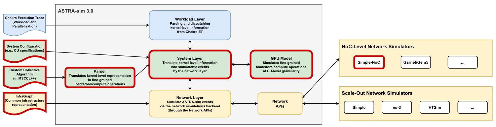
Figure 1: Overview of the ASTRA-sim 3.0 infrastructure. New and improved components are marked with bold red borders.
图 1：ASTRA-sim 3.0 基础设施概览。新增与改进的组件以加粗红色边框标示。
To properly simulate such fine-grained operations, the network model should support network-on-chip (NoC)-level details. However, the current ASTRA-sim infrastructure only assumes coarse-grained, inter-GPU communications. It neglects on-chip transfers such as a CU loading cache-line-sized data from the local HBM channel. The network simulation backend should also be upgraded to support the modeling of the architectural details of a GPU socket.
为了正确模拟此类细粒度操作，网络模型应支持片上网络（NoC）级别的细节。然而，当前的 ASTRA-sim 基础设施仅假设粗粒度的 GPU 间通信，忽略了片上传输（例如计算单元从本地 HBM 通道加载缓存行大小的数据）。网络模拟后端也应进行升级，以支持对 GPU 插槽架构细节的建模。
Finally, the community requires a common, detailed representation of distributed ML network infrastructure. Currently, different network simulation backends all require unique input formats. As different simulators capture infrastructure at distinct levels with different details, this fragmentation not only hinders accurate infrastructure modeling but also prohibits the community from exchanging their infrastructure details.
最后，社区需要一种通用且详细的方式来描述分布式机器学习网络基础设施。目前，不同的网络仿真后端均要求各自独特的输入格式。由于各仿真器对基础设施的建模层次和细节各不相同，这种碎片化不仅阻碍了准确的基础设施建模，也使得社区无法交换其基础设施细节。
In this work, we introduce ASTRA-sim 3.0: taking distributed ML simulations to the next level via high-fidelity modeling. Figure 1 summarizes the improved ASTRA-sim 3.0 simulation infrastructure. ASTRA-sim 3.0 implements new features to eliminate the limitations and to faithfully model today's distributed ML systems. ASTRA-sim 3.0 supports arbitrary customized collective algorithms through MSCCL++ representations [41]. ASTRA-sim 3.0 purposely represents workloads at Load-Store granularity, capturing fine-grained details while remaining scalable. A new GPU Model simulates them at cache-line-sized granularity with CU, workgroup, and wavefront-level modeling, just as real GPUs do. Finally, we build InfraGraph, a graph-based backend-agnostic representation of the physical system. Users can exchange and reuse a single InfraGraph description across network backends in ASTRA-sim 3.0.
在本工作中，我们推出 ASTRA-sim 3.0：通过高保真建模将分布式机器学习模拟提升至全新高度。图 1 概括了改进后的 ASTRA-sim 3.0 模拟基础设施。ASTRA-sim 3.0 实现了多项新功能，以消除原有局限性，并忠实地对当今分布式机器学习系统进行建模。ASTRA-sim 3.0 支持通过 MSCCL++ 表达[41]实现任意的自定义集合通信算法，并有意识地将工作负载以 Load-Store 粒度表示，在保持可扩展性的同时捕获细粒度细节。全新的 GPU 模型以缓存行大小的粒度对其进行模拟，并像真实 GPU 一样，提供 CU、工作组和波前级别的建模。最后，我们构建了 InfraGraph——一种基于图的后端无关物理系统表示。用户可以在 ASTRA-sim 3.0 的不同网络后端之间交换和复用单一的 InfraGraph 描述。
2 Background
2.1 ASTRA-sim
ASTRA-sim [39, 49] is an open-source distributed ML simulator. The high-level architecture is summarized in Figure 1. It consists of three building-block layers: workload, system, and network. The workload layer captures the design space of the target model and its parallelization, whereas the network layer simulates the network transfers. The system layer intermediates between the two layers, for example, estimating compute kernel runtime or breaking down a collective communication kernel into chunk-granularity transfers using predefined collective algorithms.
ASTRA-sim [39, 49] 是一个开源分布式 ML 模拟器。其高层架构总结于图 1。它由三个构建模块层组成：工作负载、系统和网络。工作负载层捕获目标模型及其并行化的设计空间，而网络层模拟网络传输。系统层在两层之间起中介作用，例如，估算计算内核运行时间，或使用预定义的集合通信算法，将集合通信内核分解为块粒度的传输。
ASTRA-sim 1.0 is the introductory version but lacked flexibility in all three layers [39]. It only supported a predefined set of training workloads, collective algorithms, and network topologies (specifically, two-dimensional switch and torus) through Garnet, a network model originally developed in gem5 [29]. Later, an application programming interface (API) to plug in arbitrary network simulators was introduced, and ns-3 [18] was incorporated as another simulation backend [38]. ASTRA-sim 2.0 addressed some flexibility limitations [49]. For the workload layer, ASTRA-sim 2.0 leverages MLCommons Chakra execution trace (ET) [43] to support arbitrary workloads. For the network layer, ASTRA-sim 2.0 introduces a new \(\alpha - \beta\) -model-based [19] Simple network simulator. \({}^{2}\)
ASTRA-sim 1.0 是初始版本，但在所有三个层面上都缺乏灵活性 [39]。它仅支持一套预定义的训练工作负载、集合通信算法和网络拓扑（具体为二维交换和环面），通过 Garnet 实现，Garnet 是 gem5 中最初开发的网络模型 [29]。后来，引入了一个可插入任意网络模拟器的应用程序编程接口（API），并将 ns-3 [18] 作为另一个模拟后端纳入 [38]。ASTRA-sim 2.0 解决了一些灵活性的限制 [49]。在工作负载层面，ASTRA-sim 2.0 利用 MLCommons Chakra 执行轨迹（ET）[43] 来支持任意工作负载。在网络层面，ASTRA-sim 2.0 引入了一个新的基于 \(\alpha - \beta\) 模型 [19] 的 Simple 网络模拟器。\({}^{2}\)
2.2 Graphics Processing Unit
We briefly introduce the background on GPUs, the dominant compute devices in distributed ML [16, 23].
我们简要介绍GPU的背景，这是分布式机器学习中使用的主要计算设备 [16, 23]。
2.2.1 Programming Model. A kernel is a function to be executed on a GPU, and comprises many threads. Each thread executes the same instruction but with different data, making the GPU follow the single-instruction, multiple-data (SIMD) paradigm. Threads in a kernel are organized into workgroups (i.e., threadblocks), a composition of threads (e.g., 1,024 threads). All threads in a workgroup are mapped and executed on one CU (i.e., streaming multiprocessor (SM)). Within a workgroup, threads are further grouped into a smaller unit called wavefronts (i.e., warps), a lock-step execution unit within a CU (e.g., 32 threads). Figure 2 depicts a GPU kernel with four workgroups, each containing two wavefronts.
2.2.1 编程模型。内核是在 GPU 上执行的函数，包含众多线程。每个线程执行相同的指令，但处理不同的数据，使得 GPU 遵循单指令多数据（SIMD）范式。内核中的线程被组织成工作组（即线程块），即线程的组合（例如，1,024 个线程）。一个工作组中的所有线程都映射到一个 CU（即流式多处理器（SM））上执行。在工作组内部，线程进一步分组为更小的单元，称为波前（即束），这是 CU 内部的锁步执行单元（例如，32 个线程）。图 2 描绘了一个具有四个工作组、每个包含两个波前的 GPU 内核。
\({}^{2}\) We name it Simple in this work (previously called Analytical), following its resemblance to the Simple network simulator in gem5 [14].
\({}^{2}\) 在本文中我们将其命名为 Simple（先前称为 Analytical），因其与 gem5 [14] 中的 Simple 网络模拟器相似。
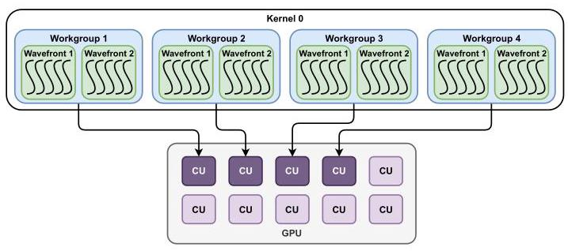
Figure 2: Abstract view of GPU program and architecture.
图2：GPU程序与架构的抽象视图
2.2.2 GPU Architecture. GPU hardware consists of many CUs to execute multiple workgroups in parallel. When a kernel is dispatched to the GPU, each workgroup is mapped onto a CU. The CU then executes threads in the wavefront in lock-step. Figure 2 shows that the four workgroups in the kernel are being executed in parallel by four CUs.
2.2.2 GPU 架构。GPU 硬件由多个计算单元（CU）组成，以并行执行多个工作组。当内核被分发到 GPU 时，每个工作组被映射到一个 CU 上。CU 随后以锁步方式执行波前中的线程。图 2 显示内核中的四个工作组正由四个 CU 并行执行。
2.3 Collective Communication
The model and/or data are dispersed across many devices in distributed ML, requiring that the devices frequently synchronize to execute the full workload. Such communication takes place in the form of collective communication patterns defined in the message passing interface (MPI) [32].
在分布式机器学习中，模型和/或数据分散在多个设备上，要求这些设备频繁同步以执行完整的工作负载。此类通信以消息传递接口（MPI）[32]中定义的集体通信模式的形式进行。
A collective algorithm defines how individual data chunks are transferred over a network topology to execute the collective patterns. Textbook collective algorithms are well-defined, basic collective algorithms that are pervasively used in today's collective communication libraries (CCLs). Ring [44], all-pairs (i.e., direct) [39], double binary tree [22], and recursive halving-doubling [44] are examples of predefined textbook collective algorithms used by CCLs today.
集合算法定义了如何通过网络拓扑传输各个数据块以执行集合模式。教科书式集合算法是定义明确、基础的集合算法，广泛应用于当今的集合通信库（CCL）中。环[44]、全对（即直接）[39]、双二叉树[22]和递归折半倍增[44]是当今CCL所使用的预定义教科书式集合算法的例子。
2.4 MSCCL++ Custom Collective Representation
As collective communication becomes a crucial part of distributed ML, many research efforts have been put into the domain; among them is the representation of collective algorithms. Notably, MSC-CLang introduces a domain-specific language (DSL) to represent arbitrary collective communication algorithms [9]. Customized collective algorithms can be written in a Python-based DSL. Later, MSCCL++ was introduced to generalize the DSL and to represent a more flexible set of collective algorithms [41]. For instance, MSCCL++ supports the use of one-sided put/get operations, allows one workgroup to talk to multiple remote GPUs simultaneously, and captures control dependencies via barriers and semaphores. MSCCL++ compiles the DSL into a custom JavaScript object notation (JSON) file, capturing workgroup-level operations of individual GPUs. Figure 3 captures a simplified view of the JSON file that represents a collective operation of two GPUs. Each GPU comprises two workgroups, each with three GPU operations.
随着集体通信成为分布式机器学习的关键组成部分，该领域投入了大量研究努力，其中就包括集体算法的表示。值得注意的是，MSC-CLang 引入了一种领域特定语言（DSL）来表示任意的集体通信算法[9]。定制化的集体算法可以用基于 Python 的 DSL 编写。后来，MSCCL++ 被提出以泛化该 DSL，并表达更灵活的集体算法集合[41]。例如，MSCCL++ 支持使用单侧 put/get 操作，允许一个工作组同时与多个远程 GPU 通信，并通过屏障和信号量来捕获控制依赖。MSCCL++ 将 DSL 编译为自定义的 JavaScript 对象表示法（JSON）文件，捕获单个 GPU 的工作组级别操作。图 3 展示了表示两个 GPU 集体操作的简化 JSON 文件视图。每个 GPU 包含两个工作组，每个工作组包含三个 GPU 操作。
"gpus": [
"gpus": ["
{ "id": 0, "threadblocks": [
ASTRA-sim 3.0 增强了一款开源分布式机器学习模拟器，以解决在自定义集合通信算法支持、细粒度 GPU 设备建模以及标准化基础设施表示方面的不足。作者指出，现有模拟器缺乏对延迟敏感的推理工作负载至关重要的详细控制路径和缓存行级别模拟，且碎片化的基础设施描述阻碍了可复现性和跨后端比较。
主要贡献包括： - Load-Store 粒度模拟：将工作负载分解为缓存行大小的 load/store 原语，并对计算单元（CU）、工作组和波阵面进行建模，以捕获细粒度的资源争用与数据移动。 - MSCCL++ 集成：使用 MSCCL++ 领域特定语言编写的自定义集合通信算法被解析为一系列低级 GPU 操作，从而支持模拟任意集合通信（例如 get 与 put 协议）。 - GPU 执行模型：一个新的 GPU 模型将工作组分派到 CU，通过循环展开执行波阵面以重叠内存请求，并对信号量和屏障等控制操作进行建模。 - 升级的网络建模：对 Simple 网络后端进行了扩展，增加了 NoC 级别表示，模拟片上路由器、内存通道和 I/O 端口以及跨 GPU 链路。 - InfraGraph：一种标准化的、基于图的基础设施描述格式，具有可复用的设备蓝图和结构模板，以及针对多个网络模拟器（Simple、ns-3、HT-Sim）的转换器和可视化工具。
案例研究表明，ASTRA-sim 3.0 支持新的设计探索：基于 get 的 Reduce-Scatter 因减少同步开销而优于基于 put 的实现，而对于大缓冲区，基于 put 的 All-Gather 更好，因为控制消息可能被数据阻塞；循环展开和寄存器文件大小调整对受延迟限制的集合通信显示出收益递减。该模拟器可扩展到 128 个 GPU（57,344 个端点），且模拟时间呈线性增长。InfraGraph 成功地在不同后端模拟了 Clos 交换结构。总体而言，ASTRA-sim 3.0 为训练和推理协同设计提供了高保真、可扩展的模拟。
{ id: 1, "ops": [ "signal", "put", "wait" ]} ]
{ id: 1, "ops": [ "信号", "放置", "等待" ]} ]
{ "id": 1, "threadblocks": [
{ "id": 1, "threadblocks": [
{ id: 0, "ops": [ "put", "nop", "get" ] },
{ id: 0, "ops": [ "put", "nop", "get" ] },
{ id: 1, "ops": [ "nop", "signal", "wait" ]} ]
{ id: 1, "ops": [ "nop", "signal", "wait" ]} ]
} ]
ASTRA-sim 3.0 增强了一个开源分布式机器学习模拟器，解决了定制集合通信算法支持、细粒度 GPU 设备建模以及标准化基础设施表示方面的局限。作者指出，现有模拟器缺乏对延迟敏感的推理工作负载至关重要的详细控制路径和缓存行级仿真，且碎片化的基础设施描述阻碍了可复现性与跨后端比较。
主要贡献包括： - Load-Store 粒度仿真：将工作负载分解为缓存行大小的 load/store 原语，并对计算单元（CU）、工作组和波前进行建模，从而捕捉细粒度的资源竞争与数据移动。 - MSCCL++ 集成：用 MSCCL++ 领域特定语言编写的定制集合算法被解析为一系列底层 GPU 操作序列，可仿真任意集合通信（例如 get 与 put 协议）。 - GPU 执行模型：新增的 GPU 模型将工作组调度到 CU，通过循环展开执行波前以重叠内存请求，并对信号量和栅栏等控制操作进行建模。 - 升级的网络建模：Simple 网络后端扩展了 NoC 级表示，在芯片上路由器、内存通道和 I/O 端口与 GPU 间链路一同仿真。 - InfraGraph：一种标准化的、基于图的基础设施描述格式，具有可复用的设备蓝图和网络结构模板，并附带了适用于多种网络模拟器（Simple、ns-3、HT-Sim）的转换器以及可视化工具。
案例研究表明，ASTRA-sim 3.0 支持全新的设计探索：基于 get 的 Reduce-Scatter 因减少了同步而优于基于 put 的实现，而对于大缓冲区，基于 put 的 All-Gather 效果更好，因为控制消息可能被数据阻塞；在延迟受限的集合通信中，循环展开和寄存器文件大小调整呈现收益递减。该模拟器可扩展至 128 个 GPU（57,344 个端点），且仿真时间呈线性增长。InfraGraph 成功跨后端模拟了 Clos 网络结构。总而言之，ASTRA-sim 3.0 为训练与推理的协同设计提供了高保真、可扩展的仿真。
... }
... }
Figure 3: A simplified example of MSCCL++ JSON collective algorithm representation.
图3：MSCCL++ JSON 集体通信算法表示的简化示例。
3 Motivation
Here, we identify the limitations of the current ASTRA-sim. We discuss why having such modeling capabilities is important for solving today's distributed ML challenges.
在此，我们指出了当前 ASTRA-sim 的局限性。我们讨论了为什么具备此类建模能力对于解决当今分布式机器学习挑战至关重要。
3.1 Customized Collective Algorithms
The current ASTRA-sim infrastructure completely lacks customized collective algorithm modeling capabilities. As Section 1 discusses, collective communication has become the major bottleneck in distributed ML. For training tasks, collective sizes are often large, and the target is to optimize for throughput, while inference communication is smaller in size and latency-sensitive. Such different natures yield distinct approaches and techniques for collective optimization. To list a few, even for textbook collective algorithms, experts fine-tune the number of workgroups, the size of individual chunks, communication protocols, or communication primitives (e.g., two-sided vs. one-sided transfers). Collective algorithm synthesizers automatically generate topology-aware collective algorithms. As the system scales, fault-tolerant collective algorithm design also becomes an important research angle. Ultimately, the existence and adoption of MSCCL++ representation itself highlight the necessity to execute customized collective algorithms.
现有的 ASTRA-sim 基础设施完全缺乏对自定义集合通信算法的建模能力。如第 1 节所述，集合通信已成为分布式机器学习的主要瓶颈。对于训练任务，集合通信的规模通常较大，优化目标侧重于吞吐量，而推理通信的数据量较小且对延迟敏感。这些不同的特性催生了截然不同的集合通信优化方法和技术。略举数例，即使对于教科书式的集合通信算法，专家也会精细调整工作组数量、单个数据块大小、通信协议或通信原语（例如，双向传输与单向传输）。集合通信算法合成器能自动生成拓扑感知的集合通信算法。随着系统规模扩展，容错集合通信算法设计也成为一个重要的研究方向。归根结底，MSCCL++ 表示法的存在和采用本身就凸显了执行自定义集合通信算法的必要性。
However, ASTRA-sim infrastructure only supports a limited set of predefined textbook collective algorithms, with very limited design parameters (e.g., number of chunks per kernel). ASTRA-sim cannot simulate today's fast-changing collectives without extensive manual implementation.
然而，ASTRA-sim 基础设施仅支持一组有限的预定义教科书式集体通信算法，设计参数非常有限（例如，每个内核的块数量）。若不进行大量手动实现，ASTRA-sim 无法模拟当今快速变化的集体通信算法。
3.2 Fine-Grained GPU Modeling
The existing ASTRA-sim infrastructure does not capture fine-grained device modeling. With the massive adoption of AI workloads, the community is shifting gears from training to ML inference. As inference workloads are highly latency-sensitive, correct latency modeling is essential.
现有的 ASTRA-sim 基础设施未能捕捉细粒度的设备建模。随着 AI 工作负载的大规模采用，社区正将重心从训练转向 ML 推理。由于推理工作负载对延迟高度敏感，正确的延迟建模至关重要。
Faithful latency modeling necessitates high-fidelity modeling of the data and control paths of the device. As articulated in Section 1, even a simple network put operation actually involves multiple repetitive steps working at cache-line granularity: (i) after making sure the destination buffer is ready, (ii) a CU reads cache-line-sized data to the register file, and (iii) initiates the network transfer of the read value; then (iv) the remote GPU stores the received data to the destination. However, none of these fine-grained operations are modeled in ASTRA-sim. This is not to mention that multiple work-groups from different communication and compute kernels contend for the limited CU and memory resources, further impacting the overall latency.
精确的延迟建模需要高保真地模拟设备的数据路径与控制路径。如第 1 节所述，即便是一个简单的网络 put 操作，实际上也涉及多个以缓存行粒度工作的重复步骤：(i) 在确保目标缓冲区就绪后，(ii) 一个计算单元（CU）将缓存行大小的数据读取到寄存器文件中，然后 (iii) 发起所读取值的网络传输；接着 (iv) 远端 GPU 将接收到的数据存储到目标位置。然而，ASTRA-sim 并未建模上述任何一种细粒度操作。更不必说，来自不同通信与计算内核的多个工作组会竞争有限的计算单元与内存资源，从而进一步影响整体延迟。
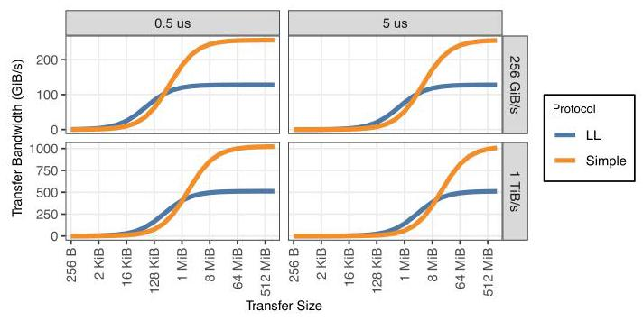
Figure 4: Analytical analysis of LL versus Simple transfer bandwidth, using different link latency and bandwidth.
图4：在不同链路延迟和带宽下，LL与Simple传输带宽的对比分析。
Figure 4 is a quantitative motivation for why such accurate latency modeling is required. Most CCLs in use today provide two communication protocols: low-latency (LL) and Simple. The Simple protocol can effectively leverage 100% of network bandwidth but comes with the tradeoff of synchronization before and after the transfer. The LL protocol eliminates the synchronization for latency optimization with the tradeoff of \({50}\%\) link bandwidth. Intuitively, LL is preferred for small transfers, and Simple starts to outperform as the transfer size increases. Using the analytical \(\alpha - \beta\) modeling with arbitrary latency and bandwidth values, we plotted the transfer bandwidth of the two protocols with different transfer sizes. When we underestimate the transfer latency (as \({0.5\mu }\mathrm{s}\) ), the Simple protocol starts to outperform LL much faster. For \({256}\mathrm{{GiB}}/\mathrm{s}\) link bandwidth, the Simple protocol outperformed LL at a 512 KiB transfer size. However, if we overestimate the link latency (as \({5\mu }\mathrm{s}\) ), the Simple protocol performance saturates at much larger transfer sizes; it only outperformed the LL protocol at a \(2\mathrm{{MiB}}\) transfer size. As the link bandwidth increases to \(1\mathrm{{TiB}}/\mathrm{s}\) , the gap is even larger: \(4\mathrm{{MiB}}\) versus 16 MiB. This simple analytical analysis underscores that improper latency modeling can lead to wrong design conclusions, which becomes especially crucial as the network becomes more performant. High-fidelity latency modeling through fine-grained GPU modeling is therefore necessitated in the simulation infrastructure.
图4定量说明了为何需要如此精确的延迟建模。当今使用的大多数CCL提供两种通信协议：低延迟（LL）和Simple。Simple协议可以有效利用100%的网络带宽，但需要在传输前后进行同步。LL协议取消了同步以优化延迟，代价是损失\({50}\%\)的链路带宽。直观上看，LL更适合小量传输，而随着传输规模增大，Simple逐渐表现更优。通过使用任意延迟和带宽值的分析性\(\alpha - \beta\)模型，我们绘制了两种协议在不同传输规模下的传输带宽。当我们低估传输延迟（设为\({0.5\mu }\mathrm{s}\)）时，Simple协议更快地超越LL协议。在\({256}\mathrm{{GiB}}/\mathrm{s}\)链路带宽下，Simple协议在512 KiB传输大小时便优于LL。然而，如果我们高估链路延迟（设为\({5\mu }\mathrm{s}\)），Simple协议的性能在更大的传输规模下才达到饱和；它仅在\(2\mathrm{{MiB}}\)传输大小时才超过LL协议。当链路带宽提升至\(1\mathrm{{TiB}}/\mathrm{s}\)时，差距更大：\(4\mathrm{{MiB}}\)对比16 MiB。这一简单的分析性分析强调，不当的延迟建模可能导致错误的设计结论，随着网络性能的提升，这一点尤为关键。因此，在仿真基础设施中需要通过细粒度GPU建模来实现高保真的延迟建模。
3.3 Common Infrastructure Representation
To accommodate different use cases (e.g., fidelity versus scalability), ASTRA-sim extends to multiple network simulation backends via common network APIs. However, users should define the physical system topology in a format specific to the target network backend. Examples include routing configurations, the duration of a message, or whether to model congestion at a given point. Through our experience using ASTRA-sim, we found the lack of a global representation format to be problematic.
为适应不同的用例（例如，保真度与可扩展性），ASTRA-sim 通过通用网络 API 扩展到多个网络模拟后端。然而，用户需要以目标网络后端特定的格式来定义物理系统拓扑。例如，路由配置、消息的持续时间，或是否在特定点对拥塞进行建模。通过使用 ASTRA-sim 的经验，我们发现缺乏一种全局表示格式是个问题。
Firstly, any physical system description is tied to a specific network backend. This fragmented approach forces users to manually rewrite infrastructure descriptions across network backends, not to mention the time to understand the semantics of the format, which is not intuitive and requires per-backend knowledge. Secondly, it hinders the community from sharing and exchanging the exact infrastructure details. Existing research often describes physical systems with high-level verbiage such as "two-tiered fat-tree topology" or through simple figures. However, this may not necessarily capture the full detail of the topology, making it vague when translating into a description that ASTRA-sim backends can understand. If the community had a common, standardized means to represent their physical topology information in a neutral format, it could facilitate the community in sharing infrastructure details and reproducing the simulation results. We envision a potential beyond ASTRA-sim in standardizing the infrastructure representation.
首先，任何物理系统的描述都与特定的网络后端绑定。这种碎片化的方式迫使用户跨网络后端手动重写基础设施描述，更不用说需要花时间去理解格式的语义，这并不直观，且需要针对各个后端具备专门知识。其次，这阻碍了社区之间共享和交换确切的基础设施细节。现有研究通常用高层次的措辞描述物理系统，例如“两层胖树拓扑”或通过简单的图示。然而，这未必能捕捉到拓扑的全部细节，在转化为 ASTRA-sim 后端能够理解的描述时会变得模糊。如果社区有一种通用且标准化的方式，以中立的格式表示其物理拓扑信息，就能促进社区共享基础设施细节并重现仿真结果。我们设想，在基础设施表示的标准化方面，其潜力可以超越 ASTRA-sim 本身。
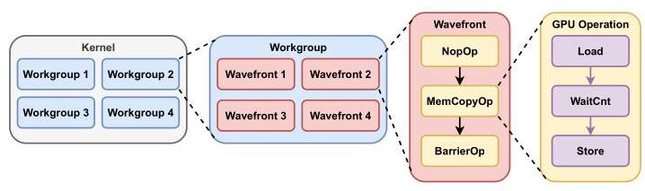
Figure 5: Abstract view of a GPU kernel broken down into fine-grained Load-Store granularity in ASTRA-sim 3.0.
图 5：ASTRA-sim 3.0 中将 GPU 内核分解为细粒度加载-存储粒度的抽象视图。
In short, the above motivates a backend-agnostic format that can represent arbitrary physical system topologies. We motivate the need for a single format that, once defined, not only captures the fine-grained details of the network infrastructure, but also can be easily shared across the research community. Such representation can be automatically translated to the backend-specific format for ASTRA-sim.
简而言之，上述讨论促使我们提出一种与后端无关的格式，能够表示任意的物理系统拓扑。我们强调需要一种单一格式，一经定义，既能刻画网络基础设施的细粒度细节，又能在研究社区中轻松共享。这种表示可以自动转换成面向 ASTRA-sim 的后端专用格式。
4 ASTRA-sim 3.0
Here, we explain the new features added to ASTRA-sim 3.0. We also articulate their implementation in detail.
此处，我们将详细解释 ASTRA-sim 3.0 新增的功能，并详细阐述其实现细节。
4.1 Fine-Grained Workload Representation
We propose to model the GPU device at the Load-Store granularity. The critical operations in distributed ML are the control and data paths over the on-chip and inter-GPU networks. They can effectively be modeled by capturing the fine-grained Load-Store instructions. Simulating the exact GPU binary at the finest granularity contains unnecessarily detailed information and hurts simulation scalability.
我们提议以加载-存储粒度对GPU设备进行建模。分布式机器学习中的关键操作是片上网络与GPU间网络上的控制路径与数据路径。通过捕获细粒度的加载-存储指令，可以有效地对这些路径进行建模。在最细粒度上模拟精确的GPU二进制代码会包含不必要的详细信息，并损害模拟的可扩展性。
A high-level overview of the GPU kernel decomposed in ASTRA-sim 3.0 is shown in Figure 5. It captures the execution in the manner in which the GPU programming model does: a workgroup comprises multiple wavefronts, each running multiple GPU operations in sequence, where each GPU operation itself is ultimately a sequence of Load-Store primitives. Below, we articulate the fine-grained workload representation in ASTRA-sim 3.0 in a bottom-up approach.
ASTRA-sim 3.0中分解后的GPU内核高层概述如图5所示。它按照GPU编程模型的方式捕获执行过程：一个工作组包含多个波前，每个波前按顺序运行多个GPU操作，而每个GPU操作本身最终是一系列加载-存储原语。下面，我们以自底向上的方式阐述ASTRA-sim 3.0中的细粒度工作负载表示。
4.1.1 GPU Instructions. As we proposed, we define primitive GPU instructions at the Load-Store granularity. These GPU instructions become the unit of simulation in ASTRA-sim 3.0. The GPU instructions can be grouped into three: (i) data instructions, (ii) control instructions, and (iii) others. For these Load-Store, the source or destination memory location may reside either locally or remotely.
4.1.1 GPU 指令。如我们所述，我们在 Load-Store 粒度上定义原语 GPU 指令。这些 GPU 指令成为 ASTRA-sim 3.0 中的模拟单元。GPU 指令可分为三类：（i）数据指令，（ii）控制指令，以及（iii）其他指令。对于这些 Load-Store 而言，其源或目标内存位置可能位于本地或远端。
Data Instructions. They represent the movement of data between the CU and memory, as defined below:
数据指令。它们表示计算单元与内存之间的数据移动，如下所定义：
- Load: A CU loads a chunk of data from memory to the register file.
- 加载：一个 CU 从内存加载一块数据到寄存器文件。
- Store: A CU stores a chunk of data from the register file to memory.
- 存储：计算单元（CU）将数据块从寄存器文件存储到内存中。
Control Instructions. These instructions also create load and store requests. However, we differentiate these from the data operations to emphasize their nature as control path instructions. They are listed below:
控制指令。这些指令也会产生加载和存储请求。然而，我们将它们与数据操作区分开来，以强调它们作为控制路径指令的性质。具体列举如下：
- SemaphoreAcquire: A CU loads a semaphore value and checks if it is released by another CU.
- SemaphoreAcquire：一个 CU 加载一个信号量值，并检查它是否被另一个 CU 释放。
- SemaphoreRelease: A CU stores a semaphore value to mark that it is released and can be acquired by another CU.
- SemaphoreRelease：一个 CU 存储一个信号量值，以标记它已被释放，并且可以被另一个 CU 获取。
Other Instructions. Finally, we add two more primitive instructions, as below, to capture non-memory executions.
其他指令。最后，我们添加了如下所示的另外两个基本指令，以捕获非内存执行。
- Reduce: Abstracts all other arithmetic or logical operations taking place in the CU.
- 归约：抽象出计算单元（CU）中发生的所有其他算术或逻辑运算。
- Waitcnt: Puts the CU on wait until the number of in-flight Load and Store drops to a specific threshold, to control intra-wavefront memory dependencies.
- Waitcnt：将 CU 置于等待状态，直到飞行中的 Load 与 Store 操作数量降至特定阈值，以控制波前内部的内存依赖关系。
4.1.2 GPU Operations. While these primitive Load-Store instructions capture the fine-grained behaviors of a GPU, they are too fine-grained to capture the logical operation the programmer leverages. To mitigate this gap, we introduce GPU operations. A GPU operation is a sequence of primitive GPU instructions, and it denotes a meaningful, functional programming unit. Examples include loading data from a range of memory addresses or synchronizing all threads within a workgroup.
4.1.2 GPU 操作。虽然这些原始加载-存储指令捕捉了 GPU 的细粒度行为，但它们过于细粒度，无法捕捉程序员所利用的逻辑操作。为了弥补这一差距，我们引入了 GPU 操作。一个 GPU 操作是一系列原始 GPU 指令，它表示一个有意义的、功能性的编程单元。例子包括从一段内存地址范围加载数据，或同步一个工作组内的所有线程。
For the scope of this work, ASTRA-sim 3.0 implements several data- and control-related GPU operations. However, any new GPU operation can be easily implemented, as it is simply a sequence of multiple Load-Store GPU instructions.
就本研究工作范围而言，ASTRA-sim 3.0 实现了多种与数据和控制相关的 GPU 操作。然而，任何新的 GPU 操作均可轻松实现，因为它只是一系列多个加载-存储 GPU 指令的序列。
Data Operations. These operations are used to load and store a range of data. We predefine three data operations as below:
数据操作。这些操作用于加载和存储一定范围的数据。我们预先定义了如下三种数据操作：
- LoadOp: A wrapper of the Load instruction. Loads a range of data from memory to the CU.
- LoadOp：Load 指令的封装。将一段数据从内存加载到计算单元（CU）。
- StoreOp: A wrapper of the Store instruction. Stores a range of data from the CU to memory.
- StoreOp：对 Store 指令的封装。将一定范围的数据从计算单元（CU）存储到内存。
- Memcpy0p: Represents memory-to-memory copy operations. Data is first loaded to the CU by the Load instruction, followed by the Waitcnt instruction to enforce a memory fence. Finally, the Store instruction writes the loaded data from the CU to the destination memory space.
- Memcpy0p：表示内存到内存的复制操作。数据首先通过 Load 指令加载到计算单元（CU），随后通过 Waitcnt 指令强制设立内存栅栏。最后，Store 指令将加载的数据从计算单元（CU）写入目标内存空间。
Control Operations. These two control operations wrap the semaphore instructions, as shown below:
控制操作。这两个控制操作封装了信号量指令，如下所示：
- SemaphoreAcquireOp: Issues a SemaphoreAcquire instruction to acquire the semaphore.
- SemaphoreAcquireOp：发出 SemaphoreAcquire 指令以获取信号量。
- SemaphoreReleaseOp: Issues a SemaphoreRelease instruction to release the semaphore.
- SemaphoreReleaseOp：发出 SemaphoreRelease 指令以释放信号量。
Other Operations. We define ReduceOp to wrap the Reduce instruction to capture all non-memory arithmetic and logical operations. Interestingly, we note that dispatching no GPU instructions may itself be a meaningful operation. An example is an operation to halt execution until a certain condition is met. We define two such operations for GPU execution control without any memory instructions.
其他操作。我们定义 ReduceOp 用于包装 Reduce 指令，从而捕获所有非内存算术和逻辑操作。有趣的是，我们注意到不派发任何 GPU 指令本身可能就是一种有意义的操作。例如，一个操作可以暂停执行直到某个条件满足。我们定义了两种此类不包含任何内存指令的 GPU 执行控制操作。
- ReduceOp: A wrapper of the Reduce instruction. Represents all arithmetic and logical operations without memory operations.
- ReduceOp：Reduce 指令的封装，表示所有不涉及内存操作的算术和逻辑运算。
- NopOp: This operation halts the execution of a workgroup until all its wavefronts reach this operation (i.e., __syncthread operation).
- NopOp：此操作会暂停工作组的执行，直到其所有波前都到达此操作（即 __syncthread 操作）。
- BarrierOp: While NopOp enforces intra-workgroup synchronization of wavefronts, BarrierOp enforces inter-workgroup synchronization.
- BarrierOp：NopOp 强制执行波前的工作组内同步，而 BarrierOp 则强制执行工作组间同步。
4.1.3 Workgroup and Wavefront. Now that we have defined the logical execution operations a GPU can execute, defining a work-group and wavefront is straightforward. A workgroup is simply a sequence of GPU operations, executed over a single CU. A work-group comprises multiple wavefronts, a unit of lock-step execution in the CU. For data operations, all wavefronts execute the Load and Store instructions, simulating each wavefront processing different ranges of memory addresses. For control path operations, on the other hand, we implement only wavefront zero to issue the Load and Store instructions, assuming a control message (i.e., reading a semaphore value) is single cache-line-sized.
4.1.3 工作组与波前。在定义了GPU可执行的逻辑执行操作之后，工作组与波前的定义便十分直接。一个工作组仅是在单个计算单元（CU）上执行的GPU操作序列。工作组由多个波前组成，波前是CU中锁步执行的单元。对于数据操作，所有波前均执行加载和存储指令，模拟每个波前处理不同范围的内存地址。而对于控制路径操作，我们仅实现波前零来发出加载和存储指令，并假设控制消息（即读取信号量值）的大小为单个缓存行。
4.1.4 Kernel. Finally, a kernel is a set of workgroups. When a kernel is dispatched to a GPU, each workgroup is mapped to an individual CU and executes in parallel.
4.1.4 内核。最后，内核是一组工作组。当内核被派发到 GPU 时，每个工作组被映射到一个单独的 CU 上并行执行。
To summarize, as in Figure 5, (i) a GPU instruction is a primitive Load-Store instruction, (ii) a GPU operation is a sequence of GPU instructions, denoting a logically meaningful execution unit, (iii) a workgroup comprises multiple GPU operations in sequence, organized in multiple wavefronts, and (iv) a kernel is a group of workgroups that run in parallel on multiple CUs.
概括而言，如图5所示，(i) GPU指令是原始的加载-存储指令，(ii) GPU操作是一系列GPU指令，表示一个逻辑上有意义的执行单元，(iii) 工作组由多个顺序排列的GPU操作组成，并以多个波前的形式组织，(iv) 内核是在多个计算单元(CU)上并行运行的一组工作组。
4.2 MSCCL++ Custom Collective Support
Now that ASTRA-sim 3.0 represents the workload in a fine-grained representation, this easily enables the simulation of custom collective algorithms leveraging the MSCCL++ representation. As explained in Section 2.4, MSCCL++ JSON representation captures arbitrary collective algorithms in per-GPU, per-workgroup operations such as put or copy. Therefore, we simply implement a straightforward translator to represent MSCCL++ operations in ASTRA-sim 3.0 GPU operations. For example, a MSCCL++ put operation (writing chunks of data from a local GPU to a remote GPU) is translated into Memcpy0p. The same applies to the get and copy operations. MSCCL++ inter-GPU control operations, signal and wait, are parsed into SemaphoreRelease0p and SemaphoreAcquireOp operations, respectively.
由于 ASTRA-sim 3.0 以细粒度表示形式描述工作负载，因此能够轻松地利用 MSCCL++ 表示来模拟自定义集合通信算法。如第 2.4 节所述，MSCCL++ JSON 表示以每个 GPU、每个工作组的操作（如 put 或 copy）捕获任意集合通信算法。因此，我们只需实现一个简单的转换器，将 MSCCL++ 操作表示为 ASTRA-sim 3.0 中的 GPU 操作。例如，MSCCL++ 的 put 操作（将数据块从本地 GPU 写入远程 GPU）被转换为 Memcpy0p 操作。同样的规则也适用于 get 和 copy 操作。MSCCL++ 的 GPU 间控制操作 signal 和 wait 分别被解析为 SemaphoreRelease0p 和 SemaphoreAcquireOp 操作。
4.3 End-to-End Workload Execution
ASTRA-sim 3.0 inherits the end-to-end workload simulation from ASTRA-sim 2.0 via MLCommons Chakra ET adoption. As shown in Figure 6, Chakra ET captures workloads at kernel granularity: a trace is a composition of compute and communication kernels and the dependencies between them. ASTRA-sim 2.0 dispatches coarse-grained events through parsing Chakra ET. Instead, ASTRA-sim 3.0 implements parsers to decompose such kernels into fine-grained workload representations. For communication kernels, we leverage the MSCCL++ parser discussed in Section 4.2. Likewise, compute kernels can be decomposed into multiple workgroups, each executing Reduce0p operations. ASTRA-sim 2.0 used very basic hardware models to simulate resource contention, such as dispatching one kernel at a time. However, in ASTRA-sim 3.0, all kernels are decomposed into the common, fine-grained representation and simulated by a single model. Therefore, resource contention between multiple compute or communication kernels is naturally captured without such arbitrary restrictions.
ASTRA-sim 3.0 通过采用 MLCommons Chakra ET，继承了 ASTRA-sim 2.0 的端到端工作负载仿真能力。如图 6 所示，Chakra ET 以内核粒度捕获工作负载：一条追踪由计算内核与通信内核及其之间的依赖关系组成。ASTRA-sim 2.0 通过解析 Chakra ET 来调度粗粒度事件。相比之下，ASTRA-sim 3.0 实现了相应的解析器，将这些内核分解为细粒度的工作负载表示。对于通信内核，我们利用第 4.2 节中讨论的 MSCCL++ 解析器。类似地，计算内核可被分解为多个工作组，每个工作组执行 Reduce0p 操作。ASTRA-sim 2.0 使用非常基础的硬件模型来仿真资源争用，例如一次仅调度一个内核。然而，在 ASTRA-sim 3.0 中，所有内核都被分解为统一的细粒度表示，并由单一模型进行仿真。因此，多个计算或通信内核之间的资源争用得以自然捕获，而无需此类人为限制。
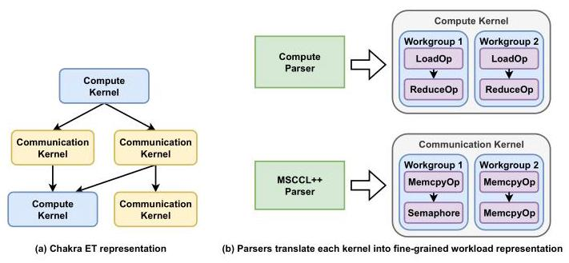
Figure 6: End-to-end workload simulation flow through ASTRA-sim 3.0.
图6：通过ASTRA-sim 3.0的端到端工作负载仿真流程。
4.4 GPU Model
So far, we have discussed how ASTRA-sim 3.0 represents the target workload in a fine-grained, Load-Store instruction representation. ASTRA-sim 3.0 implements a new execution model to simulate this fine-grained representation in detail to capture the actual program execution. Below, we explain this execution model in a top-down approach.
到目前为止，我们已讨论了 ASTRA-sim 3.0 如何以细粒度的加载-存储指令表示形式来表示目标工作负载。ASTRA-sim 3.0 实现了一个新的执行模型，以详细模拟这种细粒度表示，从而捕捉实际的程序执行过程。接下来，我们采用自顶向下的方式对该执行模型进行说明。
4.4.1 GPU Model. As the name suggests, the GPU Model abstracts a physical GPU and consists of multiple CUs. The ASTRA-sim 3.0 simulation starts by dispatching a kernel (parsed in the fine-grained representation) to GPU Model. The GPU Model iterates over the workgroups and maps each workgroup to a (free) CU in a round-robin order, thereby modeling CU resource conflicts. The number of workgroups that each CU can accommodate can be tuned by the user.
4.4.1 GPU 模型。顾名思义，GPU 模型是对物理 GPU 的抽象，由多个 CU 组成。ASTRA-sim 3.0 的仿真从将一个内核（以细粒度表示形式解析）调度到 GPU 模型开始。GPU 模型遍历各个工作组，并以轮询顺序将每个工作组映射到一个（空闲的）CU，从而对 CU 资源冲突进行建模。每个 CU 可容纳的工作组数量可由用户调节。
4.4.2 Compute Unit. When a workgroup is dispatched to a CU, it executes the wavefronts from the workgroup. The CU chooses a wavefront that is ready (i.e., not stalled) and executes the GPU operations in sequence. During the execution, if a wavefront stalls due to control path operations, the CU executes another ready wavefront, modeling wavefront-level parallelism. If all GPU operations of a wavefront are finished, then the wavefront is marked as done. When all wavefronts of a workgroup are completed, the workgroup is marked as finished and retires.
4.4.2 计算单元。当工作组被调度到计算单元时，它执行该工作组中的波前。计算单元选择一个就绪（即未停顿）的波前，并按顺序执行其中的GPU操作。在执行过程中，如果某个波前因控制路径操作而停顿，计算单元会执行另一个就绪的波前，以此模拟波前级并行。当一个波前的所有GPU操作完成后，该波前被标记为完成。当工作组的全部波前都完成后，该工作组被标记为完成并退出。
The items below explain how the non-memory-based GPU operations execute in the CU:
以下各项说明了非基于内存的 GPU 操作如何在 CU 中执行：
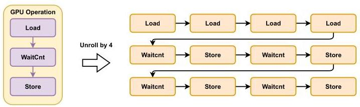
Figure 7: A Memcpy0p operation unrolled by four times.
图7：展开四次的Memcpy0p操作。
- NopOp: As mentioned in Section 4.1.2, this operation does not have any GPU instructions. Instead, when executing this operation, the CU simply puts the wavefront in a stalled state, and checks if all other wavefronts in the workgroup are also stalled. If so, Nop0p completes and all wavefronts are marked as ready to execute the next operation.
- NopOp：如第4.1.2节所述，此操作不包含任何GPU指令。相反，在执行此操作时，CU仅将波前置于停滞状态，并检查组内所有其他波前是否也处于停滞状态。若是，Nop0p完成，所有波前被标记为准备执行下一个操作。
- BarrierOp: The execution follows the same logic as NopOp, but enforces inter-workgroup synchronization rather than intra-workgroup synchronization.
- BarrierOp：执行逻辑与 NopOp 相同，但执行的是工作组间同步，而非工作组内同步。
- ReduceOp: Occupies the CU for a certain number of simulation cycles to mimic the arithmetic/logical operations, then retires the operation.
- ReduceOp：占用计算单元一定数量的仿真周期来模拟算术/逻辑运算，然后结束该操作。
Other GPU operations comprise Load or Store instructions. For example, LoadOp requires a Load instruction to load a value from memory. Likewise, SemaphoreAcquireOp wraps a SemaphoreAcquire instruction, which dispatches a Load instruction to check the semaphore value. When executing these operations, the CU injects cache-line-sized network requests, namely Wavefront Requests, into the network simulator in each cycle.
其他 GPU 操作包括 Load 或 Store 指令。例如，LoadOp 需要一个 Load 指令来从内存加载值。同样，SemaphoreAcquireOp 封装了一条 SemaphoreAcquire 指令，该指令派发一条 Load 指令来检查信号量值。当执行这些操作时，计算单元（CU）在每个周期向网络模拟器注入缓存行大小的网络请求，即 Wavefront 请求。
4.4.3 Wavefront Request. A Wavefront Request is a single cache-line-sized (e.g., 128 B) transfer that a CU dispatches to the network. In ASTRA-sim 3.0, the Wavefront Request is the unit transfer that the network backend simulates. The network layer receives these Wavefront Requests and simulates the local (on-chip) and remote (scale-up and scale-out) network traffic. When a CU executes the GPU operation of a wavefront, it generates multiple Wavefront Requests depending on the operation.
4.4.3 波前请求。波前请求是 CU 向网络发送的单个缓存行大小（例如 128 B）的数据传输。在 ASTRA-sim 3.0 中，波前请求是网络后端所模拟的传输单元。网络层接收这些波前请求，并模拟本地（片上）和远程（纵向扩展与横向扩展）网络流量。当 CU 执行一个波前的 GPU 操作时，它会根据具体操作生成多个波前请求。
- SemaphoreAcquireOp and SemaphoreReleaseOp: Acquiring and releasing a semaphore requires reading and writing the semaphore value, respectively. As we assume each semaphore fits in a single cache line, executing these operations generates one Wavefront Request from wavefront zero.
- SemaphoreAcquireOp 和 SemaphoreReleaseOp：获取和释放信号量分别需要读取和写入信号量值。由于我们假设每个信号量都适合单个缓存行，执行这些操作会从 wavefront 零生成一个 Wavefront Request。
- LoadOp, StoreOp, and MemcpyOp: They generate multiple Wavefront Requests to read or write a memory span.
- LoadOp、StoreOp 和 MemcpyOp：它们生成多个波前请求，以读取或写入一段内存跨段。
4.4.4 Loop Unrolling. When a CU executes a wavefront, it can dispatch one cache-line-sized Wavefront Request in each cycle. A GPU may facilitate intra-wavefront, instruction-level parallelization by dispatching multiple in-flight memory requests simultaneously. In ASTRA-sim 3.0, we implement this via tunable loop unrolling. Figure 7 exemplifies the unrolling of a MemcpyOp operation. MemcpyOp requires the repetition of (i) loading cache-line-sized data, (ii) making sure the data has been loaded by the Waitcnt instruction, then (iii) storing the data to the destination. Instead of repeating the three primitive instructions for each cache line, Figure 7 unrolls it by a factor of four. The unrolling enables overlapping four Load Wavefront Requests, capturing intra-wavefront parallelism.
4.4.4 循环展开。当计算单元执行一个波前时，它可以在每个周期内派发一个缓存行大小的波前请求。GPU 可能通过同时派发多个并发的内存访问请求来促进波前内部的指令级并行化。在 ASTRA-sim 3.0 中，我们通过可调的循环展开来实现这一点。图7展示了 MemcpyOp 操作的展开示例。MemcpyOp 需要重复以下步骤：(i) 加载缓存行大小的数据，(ii) 通过 Waitcnt 指令确保数据已加载完成，然后 (iii) 将数据存储到目的地。图7没有为每个缓存行重复这三条原始指令，而是以四倍系数将其展开。这种展开使得四个加载波前请求能够重叠，从而捕获波前内部的并行性。
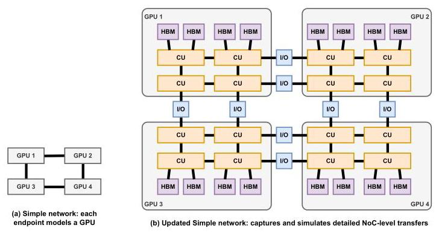
Figure 8: Updated Simple network simulation backend.
图8：更新后的Simple网络模拟后端
4.5 Detailed Simple Network Modeling
With the new custom collective and GPU modeling capabilities, ASTRA-sim 3.0 is equipped with detailed, fine-grained simulation opportunities with NoC-level requests and cache-line-sized transfers. To better accommodate this opportunity, we upgrade the Simple network simulation backend from ASTRA-sim 2.0 to simulate NoC-level details alongside the inter-GPU network. Note that ASTRA-sim 3.0 still supports other network simulation backends with detailed NoC models through the network API.
借助新增的自定义集合通信与GPU建模能力，ASTRA-sim 3.0 能够进行细粒度、高精度的仿真，支持NoC级请求与缓存行大小的传输。为更好地利用这一能力，我们将ASTRA-sim 2.0中的Simple网络仿真后端升级，使其能够在仿真GPU间网络的同时，模拟NoC级别的细节。需要注意的是，ASTRA-sim 3.0 仍可通过网络API支持其他具备详细NoC模型的网络仿真后端。
The high-level insight is depicted in Figure 8. The old Simple network model, shown in Figure 8(a), used each GPU as the building block. The network representation was restricted to simple GPU connections and simulated through coarse-grained transfers. The updated Simple network is shown in Figure 8(b). Now the target network topology is represented with NoC-level details, such as CUs, HBM channels, and I/O ports. As the GPU Model of the ASTRA-sim 3.0 infrastructure dispatches fine-grained Wavefront Request, the updated Simple with the NoC-level representation is able to simulate both local and remote operations. Memory channels are added to Simple to model the NoC and memory traffic. The network representation of Simple uses a hierarchical file-based representation and modular routing function to allow scalability and quick interchanging of network topologies or routing.
其高层洞察如图8所示。图8(a)展示了旧的Simple网络模型，该模型以每个GPU为构建单元，网络表示仅限于简单的GPU连接，并通过粗粒度传输进行模拟。图8(b)所示为更新后的Simple网络。现在，目标网络拓扑以NoC级别的细节进行表示，如CU、HBM通道和I/O端口。随着ASTRA-sim 3.0基础设施的GPU模型分派细粒度的波前请求，具备NoC级别表示的更新版Simple能够同时模拟本地和远程操作。Simple中加入了内存通道，以对NoC和内存流量进行建模。Simple的网络表示采用基于文件的分层表示和模块化路由功能，以实现可扩展性并支持网络拓扑或路由的快速互换。
4.6 Infrastructure as a Graph
We present InfraGraph, a standard, portable representation for AI and high-performance computing (HPC) network infrastructure. In-fraGraph formalizes infrastructure topology as a directed, attributed graph in which vertices represent hardware like GPUs, network interface controllers (NICs), and storage, while edges represent the connections between the hardware components. Property annotations such as bandwidth enhance the expressiveness of the graph. This representation is based on the principle that complex infrastructure topologies can be naturally expressed through graph constructs.
我们提出了 InfraGraph，一种用于人工智能与高性能计算（HPC）网络基础设施的标准化、可移植表述方式。InfraGraph 将基础设施拓扑形式化为一个有向带属性图，其中顶点代表 GPU、网络接口控制器（NIC）和存储等硬件，边代表硬件组件之间的连接。带宽等属性标注增强了图的表达能力。这一表述基于一个原则：复杂的基础设施拓扑可以通过图结构自然地表达。
Users define a graph by describing reusable infrastructure objects and topology relationships and programmatically expanding them into a complete graph representation. Reusing components allows a compact description to expressively represent a fully expanded graph, while programmatic graph construction enables automatic workflows.
用户通过描述可复用的基础设施对象和拓扑关系，并以编程方式将其扩展为完整的图表示来定义图。重用组件使得紧凑的描述能够表达性地表示完全展开的图，而编程式的图构建则支持自动化工作流。
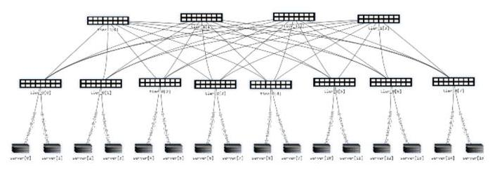
Figure 9: Clos fabric generated and visualized using Infra-Graph blueprint and visualizer.
图9：使用Infra-Graph蓝图和可视化工具生成并可视化的Clos交换结构。
4.6.1 Device Description. We first define the primitives used to describe a Device:
4.6.1 设备描述。我们首先定义用于描述设备的基本原语：
- Component: Hardware unit within a device such as a CPU, GPU, or peripheral component interconnect express (PCIe) bridge.
- 组件：设备内的硬件单元，如CPU、GPU或外设组件互连标准（PCIe）桥接器。
- Link: Named connection container with physical properties such as bandwidth or latency.
- 链路：命名的连接容器，具有带宽或延迟等物理属性。
4.6.2 InfraGraph Graph Construction. A core design principle of InfraGraph is to make the definition compact by reusing modular definitions. Rather than manually defining every endpoint and interconnection in a large-scale AI cluster, users describe reusable infrastructure objects that can be programmatically expanded into a complete graph. For example, in a scale-out topology across multiple host servers, a single host can be represented as a Device where hardware Component such as a CPU, GPU, or PCIe bridge are represented as vertices and PCIe Edges are the edges. Instead of repeatedly listing the Components and Edges multiple times for all hosts, a user can elect to programmatically construct them. The below primitives enable large construction:
4.6.2 InfraGraph 图构建。InfraGraph 的一个核心设计原则是通过复用模块化定义使描述更为紧凑。用户无需手动定义大规模 AI 集群中的每一个端点和互连，而是描述可复用的基础设施对象，这些对象可以通过编程扩展到完整的图中。例如，在跨多个主机服务器的横向扩展拓扑中，单个主机可以表示为一个 Device，其中硬件 Component（如 CPU、GPU 或 PCIe 桥）表示为顶点，PCIe Edge 表示为边。用户不必为所有主机反复罗列 Component 和 Edge，而是可以选择以编程方式构建它们。下列原语支持大规模构建：
- Device: Subgraph template for device hardware, containing Component and Edges.
- 设备：设备硬件的子图模板，包含组件和边。
- Instance: Device instantiation alias.
- 实例：设备实例化的别名。
- Infrastructure: Top level graph container.
- 基础设施：顶层图容器。
- Device.Edge: Edge of an infrastructure graph defined by two Device endpoints and a connecting Link.
- Device.Edge：由两个 Device 端点和一条连接 Link 定义的基础设施图的边。
4.6.3 Blueprints. We also offer pre-built, composable templates for common hardware platforms and network fabrics. Device blueprints define the internal hardware structure of a single platform-components, links, and intra-device edges-and serve as reusable building blocks. Fabric blueprints compose device instances into full network topologies. These blueprints are parameterized (e.g., the number of hosts) and automatically instantiated. For example, SingleTierFabric fabric blueprint implements a flat single-switch-layer topology for small-scale deployments, while ClosFatTreeFabric produces a scalable hierarchical topology parameterized by switch port count and network depth, automatically computing switch counts and wiring all links per the standard CLOS construction.
4.6.3 蓝图。我们还为常见的硬件平台和网络结构提供了预构建的、可组合的模板。设备蓝图定义单个平台的内部硬件结构——组件、链路和跨设备边缘——并作为可复用的构建块。结构蓝图将设备实例组合成完整的网络拓扑。这些蓝图是参数化的（例如，主机数量）并可自动实例化。例如，SingleTierFabric 结构蓝图实现了适用于小规模部署的扁平单交换机层拓扑，而 ClosFatTreeFabric 则生成由交换机端口数量和网络深度参数化的可扩展分层拓扑，自动计算交换机数量并根据标准 CLOS 构造连接所有链路。
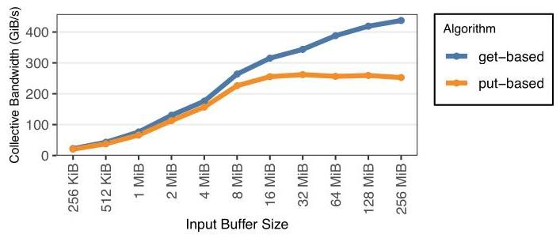
Figure 10: Simulated collective performance of get- and put-based Reduce-Scatter with 32 GPUs.
图10：模拟的基于get和put的Reduce-Scatter在32个GPU上的集合通信性能。
4.7 InfraGraph Toolchain
4.7.1 Translator. We build a translator that takes the InfraGraph description and automatically translates this into a physical system description that each network backend in ASTRA-sim can understand. The translator has three backend translators for the publicly available network backends of ASTRA-sim: Simple, ns-3, and HT-Sim. Each backend translator automatically derives its required parameters from the annotated graph. The HTSim translator infers fat-tree structural parameters from the topology; ns-3 assigns identifiers to GPU ranks, NICs, and switches and reads per-link properties from edge annotations; and the Simple translator additionally detects topology patterns to decompose large node counts into multi-dimensional groups for collective communication modeling. In all cases, the same InfraGraph description produces valid configurations across all backends, enabling direct cross-backend comparison under identical infrastructure assumptions.
4.7.1 转换器。我们构建了一个转换器，它接收 InfraGraph 描述，并将其自动转换为 ASTRA-sim 中每个网络后端都能理解的物理系统描述。该转换器为 ASTRA-sim 公开可用的网络后端提供了三个后端转换器：Simple、ns-3 和 HT-Sim。每个后端转换器自动从带注解的图中推导出其所需参数。HT-Sim 转换器从拓扑中推断胖树结构参数；ns-3 为 GPU 等级、NIC 和交换机分配标识符，并从边注解中读取每条链路的属性；而 Simple 转换器还额外检测拓扑模式，将大量节点分解为多维组以进行集合通信建模。在所有情况下，相同的 InfraGraph 描述能够在所有后端上产生有效的配置，从而在相同的基础设施假设下实现直接的跨后端比较。
4.7.2 Visualizer. The visualizer receives an InfraGraph and automatically generates network connectivity plots. This allows users to see whether the network graph they defined is what they indeed intended.
4.7.2 可视化工具。该可视化工具接收一个 InfraGraph，并自动生成网络连接图。这使用户能够查看他们所定义的网络图是否确实符合其预期。
4.7.3 Fully Qualified Graph and InfraGraph Service. InfraGraph expands a topology description into a fully qualified graph composed of infrastructure nodes and edges. Each device, component, port, and link is represented using unique hierarchical identifiers, enabling accurate topology representation, communication path discovery, graph traversal, connectivity analysis, and topology-aware simulation across large-scale AI and HPC infrastructures. An infrastructure node represents the fundamental entity within the infrastructure graph and corresponds to a specific endpoint in the system topology. A node follows the naming convention:
4.7.3 完全限定图与 InfraGraph 服务。InfraGraph 将拓扑描述展开为一个由基础设施节点和边构成的完全限定图。每个设备、组件、端口和链路均使用唯一的层次化标识符表示，从而能够在大型 AI 和高性能计算基础设施中实现精确的拓扑表示、通信路径发现、图遍历、连通性分析以及拓扑感知仿真。基础设施节点代表基础设施图中的基本实体，对应于系统拓扑中的特定端点。节点的命名遵循以下约定：
<设备实例>.<索引>.<组件>.<索引>。这种层次化命名结构可在大型异构系统中精确标识组件。基础设施边表示两个基础设施节点之间的通信关系。边定义了图内的连通性，并对组件间的通信链路建模。交换机的一条边的表示示例如下：(switch.0.asic.0, switch.0.port.0, pcie)，其中分别包含源节点、目标节点以及连接两者的链路。
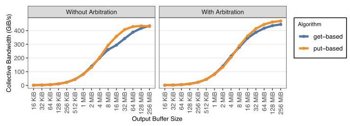
Figure 11: Simulated collective bandwidth of get- and put-based All-Gather with 16 GPUs, with and without arbitration between control and data messages.
图11：使用16个GPU，在控制消息与数据消息之间有仲裁和无仲裁情况下，基于get和put的All-Gather的模拟集合通信带宽
5 Case Studies
In this section, we run various case studies to showcase how ASTRA-sim 3.0 enables new design space exploration opportunities that previous simulators could not capture. We wish to highlight that this section aims to demonstrate various use cases and the applicability of the ASTRA-sim 3.0 simulation infrastructure, not necessarily showcasing quantitative optimization measures of specific products or infrastructures. Therefore, we evaluate a generic GPU architecture with power-of-two configuration values.
在本节中，我们开展了多项案例研究，以展示 ASTRA-sim 3.0 如何开辟既往模拟器无法捕捉的新设计空间探索机遇。我们希望强调，本节旨在展示 ASTRA-sim 3.0 模拟基础设施的多种用例与适用性，而非呈现特定产品或基础设施的定量优化措施。因此，我们以一个采用 2 的幂次配置值的通用 GPU 架构为评估对象。
5.1 Target GPU Architecture
For the fine-grained GPU modeling case studies, we implement a generic GPU architecture. We model a two-dimensional mesh NoC with 32 routers \(\left( {8 \times 4}\right)\) with \(1\mathrm{{TiB}}/\mathrm{s}\) on-chip links, each equipped with four CUs (i.e., 128 CUs total per GPU). The topmost and bottommost NoC routers are also connected to 16 memory channels each, providing 4 TiB/s cumulative memory bandwidth. Likewise, the leftmost and rightmost NoC routers are equipped with four I/O ports each, driving 1 TiB/s cumulative scale-up bandwidth with \({1\mu }\mathrm{s}\) link latency per GPU. In total, each GPU is modeled as a collection of 448 endpoints.
针对细粒度GPU建模的案例研究，我们实现了一种通用GPU架构。我们建模了一个二维网格NoC，包含32个路由器\(\left( {8 \times 4}\right)\)，片内链路带宽为\(1\mathrm{{TiB}}/\mathrm{s}\)，每个路由器配备四个CU（即每个GPU共128个CU）。顶部和底部的NoC路由器还分别连接到16个内存通道，提供累计4 TiB/s的内存带宽。同样，左侧和右侧的NoC路由器各配备四个I/O端口，提供累计1 TiB/s的扩展带宽，每GPU链路延迟为\({1\mu }\mathrm{s}\)。总体而言，每个GPU被建模为由448个端点组成的集合。
5.2 Collective Algorithm Design
We first demonstrate how ASTRA-sim 3.0 enables a new realm of modeling collective algorithm designs and assists network designers in optimizing the target system, through the fine-grained, faithful control path modeling. Unlike existing infrastructures that don't support custom collective algorithms, ASTRA-sim 3.0 enables the comparison of using get versus put for data transfers, which imply different synchronization requirements.
我们首先展示ASTRA-sim 3.0如何通过细粒度、忠实的控制路径建模，开启集体算法设计建模的新领域，并协助网络设计者优化目标系统。与不支持自定义集体算法的现有基础设施不同，ASTRA-sim 3.0能够比较使用get与put进行数据传送，这两种方式意味着不同的同步要求。
We evaluate the bandwidth of get- and put-based Reduce-Scatter algorithms over a 32-GPU cluster with 32 workgroups per GPU. Simulated collective bandwidths (i.e., buffer size divided by collective time) are shown in Figure 10. The results show that get-based Reduce-Scatter outperforms put-based Reduce-Scatter for large collectives.
我们在一个包含32个GPU、每个GPU配备32个工作组的集群上，评估了基于get和基于put的Reduce-Scatter算法的带宽。模拟得到的集合通信带宽（即缓冲区大小除以集合通信时间）如图10所示。结果表明，对于大规模集合通信，基于get的Reduce-Scatter算法性能优于基于put的Reduce-Scatter算法。
Modeling Insight. For put operations, the sender must notify the receiver after the completion of the transfer (i.e., SemaphoreRelease0p should follow after a remote Store). This incurs unnecessary control traffic and hinders the overlap of data transfer and reduction computation, as the receiver must run SemaphoreAcquireOp before ReduceOp. However, get operations eliminate synchronization. Once the initiator receives the data via a remote Load, that GPU can immediately start the reduction. This enables compute-communication overlap at cache-line granularity.
建模洞察。对于 put 操作，发送方必须在传输完成后通知接收方（即，SemaphoreReleaseOp 应紧跟在远程 Store 之后）。这会产生不必要的控制流量，并阻碍数据传输与归约计算的重叠，因为接收方必须在 ReduceOp 之前执行 SemaphoreAcquireOp。相比之下，get 操作消除了同步。一旦发起方通过远程 Load 收到数据，该 GPU 就能立即开始归约。这实现了缓存行粒度的计算—通信重叠。
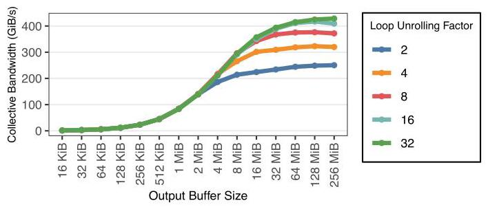
Figure 12: Simulated All-to-All performance of varying loop unrolling factors with 16 GPUs.
图 12：使用 16 个 GPU 时，不同循环展开因子下的模拟 All-to-All 性能。
We also compare get- versus put-based collective algorithms for All-Gather, using 16 GPUs with 60 workgroups each. Figure 11 captures the result. Notably, the get-based collective is less performant than the put-based one.
我们还比较了针对 All-Gather 操作的基于 get 与基于 put 的集合通信算法，使用 16 个 GPU，每个配置 60 个工作组。图 11 展示了结果。值得注意的是，基于 get 的集合通信算法性能低于基于 put 的算法。
Modeling Insight. Unlike Reduce-Scatter, All-Gather does not have a reduction operation, eliminating the benefits of get operations. Rather, as the buffer size becomes large, the control messages (i.e., requests to the remote GPU to send data) are being blocked by data responses. put operations, on the other hand, push the data first to the network, and the responses (i.e., acknowledgment messages after remote Store) have a marginal effect on performance even if blocked. By using fair arbitration of control and data messages, we minimized the performance gap.
建模洞察。与 Reduce-Scatter 不同，All-Gather 没有归约操作，因此无法利用 get 操作的优势。相反，当缓冲区变大时，控制消息（即请求远程 GPU 发送数据）会被数据响应阻塞。而 put 操作则是先将数据推送到网络，其响应（即远程 Store 后的确认消息）即使被阻塞，对性能的影响也微乎其微。通过采用控制消息与数据消息的公平仲裁，我们将性能差距降至最低。
Different collective algorithms, even as small as using get versus put, have a significant impact and implications for performance and network design requirements and configurations. They exemplify the necessity of having fine-grained control path modeling that ASTRA-sim 3.0 enables.
不同的集合通信算法，哪怕只是像使用 get 与 put 操作这样微小的差异，都会对性能和网络设计需求及配置产生重大影响。它们体现了 ASTRA-sim 3.0 所支持的细粒度控制路径建模的必要性。
5.3 GPU Architecture Exploration
ASTRA-sim 3.0 fine-grained modeling is also applicable to GPU architecture design and enables new design space exploration capabilities. For example, ASTRA-sim 3.0 can be used to model and determine the degree of required intra-wavefront, instruction-level parallelism to optimize collective performance. Figure 12 measures the All-to-All performance using 16 GPUs, 60 workgroups per GPU. Modeling Insight. The result indicates that increased instruction-level parallelism, which enables each CU to dispatch multiple concurrent Wavefront Request, is beneficial for improving bandwidth-bound collectives. Notably, (i) the benefit saturates after hitting the maximum number of Wavefront Request each CU can dispatch at a time, and (ii) instruction-level parallelism is not a relevant optimization for latency-bound, small-sized collectives.
ASTRA-sim 3.0 的细粒度建模同样适用于 GPU 架构设计，并开启了新的设计空间探索能力。例如，ASTRA-sim 3.0 可用于建模并确定所需的波前内指令级并行度，以优化集合通信性能。图 12 测量了使用 16 个 GPU、每个 GPU 60 个工作组的 All-to-All 性能。建模洞察。结果表明，增加指令级并行度使每个计算单元 (CU) 能够同时派发多个波前请求，有利于改善带宽受限的集合通信。值得注意的是，(i) 当达到每个计算单元一次最多可派发的波前请求数量后，这种好处趋于饱和；(ii) 指令级并行并非延迟受限的小型集合通信的相关优化手段。
We also evaluate how the maximum number of Wavefront Request each CU can dispatch impacts the collective bandwidth. Figure 13 summarizes the All-Gather performance with 32 GPUs, 62 workgroups per CU.
我们还评估了每个CU可调度的最大波前请求数对集合带宽的影响。图13总结了使用32个GPU、每CU 62个工作组时的All-Gather性能。
Modeling Insight. This configuration is a proxy for the register file size, as it is the determining factor of how many cache-line-sized requests a CU can service concurrently. Similar to the loop unrolling observation, (i) register file size does not have a meaningful impact on control-path-dominated, latency-bound collectives, and (ii) the benefit saturates quickly after hitting a specific register file size.
建模洞察。该配置是寄存器文件大小的代理指标，因为它决定了一个计算单元（CU）能够同时处理多少个缓存行大小的请求。与循环展开的观察类似，(i) 寄存器文件大小对控制路径主导且延迟受限的集合通信操作没有显著影响，(ii) 在达到特定的寄存器文件大小后，收益会迅速饱和。
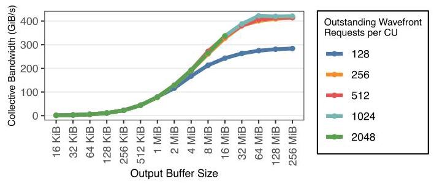
Figure 13: Simulated All-Gather bandwidth with 32 GPUs, with different numbers of maximum outstanding Wavefront Request limits per CU.
图13：使用32个GPU模拟的All-Gather带宽，每个CU上的最大未完成波前请求限制数量不同。
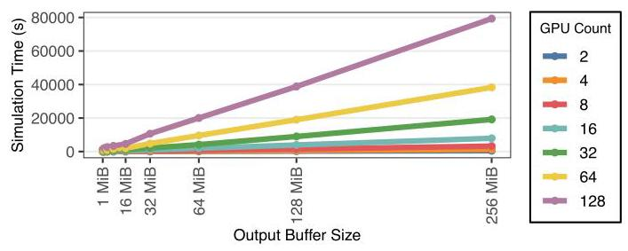
Figure 14: Wall-clock simulation time of All-Gather for 1- 256 MiB output buffer sizes, when modeling 2-128 GPUs.
图 14：在建模 2 到 128 个 GPU 时，All-Gather 操作在 1 至 256 MiB 输出缓冲区大小下的墙上时钟模拟时间。
These examples highlight the effectiveness of having fine-grained, Load-Store-level architecture modeling that enables new architectural explorations.
这些示例凸显了具备细粒度级Load-Store架构建模的有效性，从而能够支持新的架构探索。
5.4 Fine-Grained Simulation Scalability
We also analyze the scalability of the fine-grained, cache-line-sized Load-Store modeling with the updated Simple network's NoC-level simulation. Specifically, we measure the wall-clock simulation time of All-Gather collective communication with 32 work-groups per GPU, for 1-256 MiB output buffer sizes. We scale the target system to 2-128 GPUs. Notably, a 128-GPU cluster simulates 57,344 (128 GPUs×448) endpoints simultaneously at 128 B granularity. The results are summarized in Figure 14. We also plot the simulation throughput (i.e., how many nanoseconds ASTRA-sim 3.0 can simulate per wall-clock second) in Figure 15.
我们还分析了细粒度的、缓存行大小的加载-存储（Load-Store）建模与更新后的简易网络（Simple network）的片上网络（NoC）级模拟的可扩展性。具体而言，我们测量了在每 GPU 32 个工作组、输出缓冲区大小为 1–256 MiB 的情况下，All-Gather 集合通信的墙钟模拟时间。我们将目标系统的规模扩展到 2 至 128 个 GPU。值得注意的是，一个 128 GPU 的集群以 128 B 粒度同时模拟了 57,344（128 GPU×448）个端点。结果汇总于图 14。我们还在图 15 中绘制了模拟吞吐量（即 ASTRA-sim 3.0 每墙钟秒能模拟多少纳秒）。
Simulation Insight. The larger the collective size, the larger the number of 128 B-sized Wavefront Requests the simulation requires to be simulated. Therefore, for all scenarios, the simulation time is linear in the output buffer size. Regardless of the number of Wavefront Requests dispatched to the network simulator, the simulator retained similar simulation throughput. Rather, it is determined by the target system scale being modeled.
仿真洞察。集合通信规模越大，仿真所需的128 B大小的波前请求数量就越多。因此，在所有场景下，仿真时间与输出缓冲区大小成线性关系。无论向网络模拟器派发的波前请求数量如何，模拟器都能保持相似的仿真吞吐量。相反，吞吐量由所建模的目标系统规模决定。
5.5 Scale-Out Infrastructure Simulation
Finally, we validate ASTRA-sim 3.0's ability to capture distinct networks via a standardized InfraGraph. We simulate a 1 MB ring All-Reduce across eight GPUs interconnected via a Clos fabric shown in Figure 9 using the ns-3 packet-level backend. The system is instantiated from the InfraGraph device blueprint, with per-device and per-link properties bound via the annotation layer. Results are summarized in Table 1. The simulation properly modeled the Clos scale-out network, yielding a minimum flow completion time (FCT) of 11,250 ns and a standalone FCT of 11,857 ns. The infrastructure does not incur any packet drops, confirming that the ring traffic pattern remains lossless within the simulated fabric.
最后，我们通过标准化 InfraGraph 验证了 ASTRA-sim 3.0 捕获不同网络的能力。我们使用 ns-3 包级后端，模拟了 1 MB 的环 All-Reduce 操作，该操作在通过图 9 所示的 Clos 光纤互连的八个 GPU 上执行。系统从 InfraGraph 设备蓝图实例化，并通过注释层绑定了每个设备和每条链路的属性。结果汇总于表 1。该模拟正确地建模了 Clos 横向扩展网络，产生的最小流完成时间（FCT）为 11,250 ns，独立 FCT 为 11,857 ns。该基础设施没有造成任何丢包，证实了在所模拟的光纤中环流量模式是无损的。
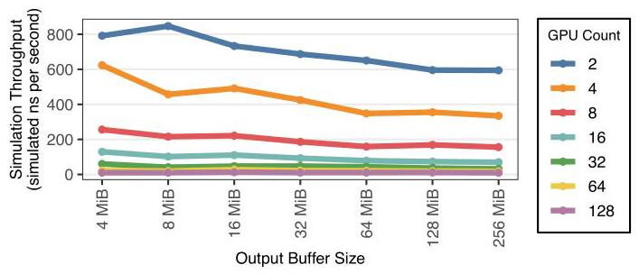
Figure 15: Simulation throughput (i.e., simulated nanoseconds per wall-clock second) for 2-128 GPUs.
图 15：2 至 128 GPU 的模拟吞吐量（即每墙钟秒模拟的纳秒数）
6 Related Work
We largely group previous simulators into two domains: (i) GPU binary simulators and (ii) distributed ML simulators.
我们将以往的仿真器主要分为两类：（i）GPU 二进制仿真器以及（ii）分布式机器学习仿真器。
GPU Binary Simulators. GPGPU-sim [17] and MacSim [15] are cycle-accurate simulators of GPU executables, modeling the complete instruction set architecture (ISA) of a GPU. Accel-sim [24] is another example of an instruction-level GPU binary simulator. We note that such fine-grained, cycle-accurate or instruction-level simulators take a long time to simulate a single GPU, making them prohibitive for multi-GPU simulations. Also, ISA-level simulation is not relevant to distributed ML as the communication performance is dominated by network operations.
GPU 二进制模拟器。GPGPU-sim [17] 和 MacSim [15] 是 GPU 可执行程序的周期精确模拟器，可对 GPU 的完整指令集架构（ISA）进行建模。Accel-sim [24] 是另一款指令级 GPU 二进制模拟器的例子。我们注意到，此类细粒度、周期精确或指令级模拟器模拟单个 GPU 耗时极长，因此难以用于多 GPU 模拟。此外，ISA 级模拟与分布式机器学习无关，因为通信性能主要由网络操作决定。
Distributed ML Simulators. Multiple distributed ML simulators have been introduced to the research community. ATLAHS [42] models AI use cases, though it mainly looks at high-performance computing (HPC) or storage workloads. Calculon [21] provides detailed analytical modeling for LLM system co-design, and TrioSim [27] extrapolates single-GPU operator traces to large-scale multi-dimensional parallel execution. Maya [51] and Phanthora [37] reuse model code to easily capture and model workload information. SimAI [47] leverages parallelized discrete event simulation to improve scalability. Arcadia [11] scales further to support multi-job scheduling scenarios. Notably, these simulators don't support arbitrarily customized collective algorithms and default to textbook algorithms. Also, none of the simulators capture CU-level, cache-line-sized GPU behaviors, crucial to modeling important control-path latencies.
分布式机器学习模拟器。研究社区已推出多个分布式机器学习模拟器。ATLAHS [42] 对 AI 用例进行建模，但主要关注高性能计算（HPC）或存储工作负载。Calculon [21] 为 LLM 系统协同设计提供了详细的分析建模，而 TrioSim [27] 则将单 GPU 算子追踪外推至大规模多维并行执行。Maya [51] 和 Phanthora [37] 通过复用模型代码，可轻松捕获并建模工作负载信息。SimAI [47] 利用并行化离散事件模拟来提升可扩展性。Arcadia [11] 则进一步扩展，以支持多任务调度场景。值得注意的是，这些模拟器不支持任意自定义的集合通信算法，默认采用教科书式算法。此外，没有一款模拟器能捕获 CU 级、缓存行大小的 GPU 行为，而这对于建模重要的控制路径延迟至关重要。
7 Conclusion
We introduce ASTRA-sim 3.0, an update to the ASTRA-sim framework equipped with high-fidelity modeling capabilities. ASTRA-sim 3.0 enables new design space exploration opportunities by capturing fine-grained control path and architectural details with custom collective modeling. ASTRA-sim 3.0 also introduces Infra-Graph, a common representation to capture the exact distributed ML infrastructure.
我们推出了 ASTRA-sim 3.0，这是 ASTRA-sim 框架的更新版本，具备高保真建模能力。ASTRA-sim 3.0 通过自定义集合通信建模捕捉细粒度的控制路径和架构细节，从而开辟了新的设计空间探索机遇。ASTRA-sim 3.0 还引入了 Infra-Graph，这是一种通用表示，用于精确刻画分布式机器学习基础设施。
Table 1: ns-3 All-Reduce simulation result.
表1：ns-3 全归约模拟结果。
| Metric | Clos Network |
| AllReduce Completion Time $\left( {\mu \mathrm{s}}\right)$ | 165.98 |
| Achieved Bus Bandwidth (Gbps) | 88.45 |
| Min FCT (ns) | 11,250 |
| Max FCT (ns) | 14,552 |
| Avg FCT (ns) | 11,477 |
| Standalone FCT (ns) | 11,857 |
| Peak FCT Overhead (ns) | 2,695 |
Acknowledgments
We express our deepest gratitude to the original developers and authors of the ASTRA-sim infrastructure: Saeed Rashidi, Srinivas Sridharan, Sudarshan Srinivasan, and Taekyung Heo.
我们向 ASTRA-sim 基础设施的原始开发者与作者——Saeed Rashidi、Srinivas Sridharan、Sudarshan Srinivasan 和 Taekyung Heo，致以最深切的谢意。
AMD, the AMD Arrow logo, and combinations thereof are trademarks of Advanced Micro Devices, Inc. Other product names used in this publication are for identification purposes only and may be trademarks of their respective companies.
AMD、AMD 箭头徽标及其组合是 Advanced Micro Devices, Inc. 的商标。本出版物中使用的其他产品名称仅用于识别目的，并且可能是其各自公司的商标。
AI Usage. Generative AI models (i.e., LLMs) are only used to check the writing quality and grammatical errors of the paper. All contents are solely created by the authors.
AI使用说明。生成式人工智能模型（即大语言模型）仅用于检查论文的写作质量与语法错误。所有内容均由作者独立创作。
References
[1] AMD. [n.d.]. AMD CDNA 4 Architecture. Accessed: 2026-04-30. https://www.amd.com/content/dam/amd/en/documents/instinct-tech-docs/white-papers/amd-cdna-4-architecture-whitepaper.pdf
[1] AMD. [出版日期不详]. AMD CDNA 4 架构. 访问日期: 2026-04-30. https://www.amd.com/content/dam/amd/en/documents/instinct-tech-docs/white-papers/amd-cdna-4-architecture-whitepaper.pdf
[2] Zixian Cai, Zhengyang Liu, Saeed Maleki, Madan Musuvathi, Todd Mytkowicz, Jacob Nelson, and Olli Saarikivi. 2021. Synthesizing optimal collective algorithms. In Proc. undefined. 62-75. arXiv:2008.08708 [cs] doi:10.1145/3437801.3441620
[2] Zixian Cai, Zhengyang Liu, Saeed Maleki, Madan Musuvathi, Todd Mytkowicz, Jacob Nelson 和 Olli Saarikivi。2021年。合成最优集合算法。载于《会议录》未定义。62-75页。arXiv:2008.08708 [cs] doi:10.1145/3437801.3441620
[3] Francisco Caravaca, Ángel Cuevas, and Rubén Cuevas. 2025. From Prompts to Power: Measuring the Energy Footprint of LLM Inference. arXiv:2511.05597 [cs.AI] (2025). doi:10.48550/arXiv.2511.05597
[3] Francisco Caravaca, Ángel Cuevas 与 Rubén Cuevas. 2025. 《从提示到功耗：测量大语言模型推理的能源足迹》. arXiv:2511.05597 [cs.AI] (2025). doi:10.48550/arXiv.2511.05597
[4] Xin Chen, Xiaoyang Wang, Ana Colacelli, Matt Lee, and Le Xie. 2025. Electricity Demand and Grid Impacts of AI Data Centers: Challenges and Prospects. (2025). doi:10.48550/arXiv.2509.07218
[4] Xin Chen、Xiaoyang Wang、Ana Colacelli、Matt Lee 和 Le Xie。2025年。《AI 数据中心的电力需求与电网影响：挑战与展望》。(2025)。doi:10.48550/arXiv.2509.07218
[5] Ziteng Chen, Xiaohe Hu, Menghao Zhang, Yanmin Jia, Yan Zhang, Mingjun Zhang, Da Liu, Fangzheng Jiao, Jun Chen, He Liu, Aohan Zeng, Shuaixing Duan, Ruya Gu, Yang Jing, Bowen Han, Jiahao Cao, Wei Chen, Wenqi Xie, Jinlong Hou, Yuan Cheng, Bohua Xu, Mingwei Xu, and Chunming Hu. 2025. An Efficient, Reliable and Observable Collective Communication Library in Large-scale GPU Training Clusters. arXiv:2510.00991 [cs] (2025). doi:10.48550/arXiv.2510.00991
[5] Ziteng Chen, Xiaohe Hu, Menghao Zhang, Yanmin Jia, Yan Zhang, Mingjun Zhang, Da Liu, Fangzheng Jiao, Jun Chen, He Liu, Aohan Zeng, Shuaixing Duan, Ruya Gu, Yang Jing, Bowen Han, Jiahao Cao, Wei Chen, Wenqi Xie, Jinlong Hou, Yuan Cheng, Bohua Xu, Mingwei Xu, and Chunming Hu. 2025. 《面向大规模 GPU 训练集群的高效、可靠且可观测的集合通信库》. arXiv:2510.00991 [cs] (2025). doi:10.48550/arXiv.2510.00991
[6] Jaehong Cho, Hyunmin Choi, Guseul Heo, and Jongse Park. 2026. LLMServ-ingSim 2.0: A Unified Simulator for Heterogeneous and Disaggregated LLM Serving Infrastructure. arXiv:2602.23036 [cs] (2026). doi:10.48550/arXiv.2602.23036
[6] Jaehong Cho, Hyunmin Choi, Guseul Heo, and Jongse Park. 2026. LLMServ-ingSim 2.0: 面向异构与解聚式大语言模型服务基础设施的统一模拟器. arXiv:2602.23036 [cs] (2026). doi:10.48550/arXiv.2602.23036
[7] Jaehong Cho, Minsu Kim, Hyunmin Choi, Guseul Heo, and Jongse Park. 2024. LLMServingSim: A HW/SW Co-Simulation Infrastructure for LLM Inference Serving at Scale. In Proc. 2024 IEEE International Symposium on Workload Characterization (IISWC). 15-29. doi:10.1109/IISWC63097.2024.00012
[7] Jaehong Cho, Minsu Kim, Hyunmin Choi, Guseul Heo, Jongse Park. 2024. LLMServingSim: 面向大规模LLM推理服务的软硬件协同仿真基础设施. 载于2024年IEEE国际工作负载特性研讨会(IISWC)论文集. 15-29页. doi:10.1109/IISWC63097.2024.00012
[8] Sanghun Cho, Hyojun Son, and John Kim. 2023. Logical/Physical Topology-Aware Collective Communication in Deep Learning Training. In Proc. 2023 IEEE International Symposium on High-Performance Computer Architecture (HPCA). 56-68. doi:10.1109/HPCA56546.2023.10071117
[8] Sanghun Cho, Hyojun Son, 和 John Kim. 2023. 深度学习训练中逻辑/物理拓扑感知的集合通信. 载于《2023年IEEE国际高性能计算机体系结构研讨会(HPCA)论文集》, 第56-68页. doi:10.1109/HPCA56546.2023.10071117
[9] Meghan Cowan, Saeed Maleki, Madanlal Musuvathi, Olli Saarikivi, and Yifan Xiong. 2023. MSCCLang: Microsoft collective communication language. In Proc. 28th ACM International Conference on Architectural Support for Programming Languages and Operating Systems (ASPLOS). 502-514. doi:10.1145/3575693.3575724
[9] Meghan Cowan, Saeed Maleki, Madanlal Musuvathi, Olli Saarikivi, 和 Yifan Xiong. 2023. MSCCLang: 微软集体通信语言. 载于第28届ACM编程语言和操作系统架构支持国际会议(ASPLOS)论文集. 502-514. doi:10.1145/3575693.3575724
[10] DeepSeek-AI. 2026. DeepSeek-V4: Towards Highly Efficient Million-Token Context Intelligence. Accessed: 2026-05-01. https://huggingface.co/deepseek-ai/DeepSeek-V4-Pro/blob/main/DeepSeek_V4.pdf
[10] DeepSeek-AI. 2026. DeepSeek-V4：面向高效百万Token上下文智能。访问日期：2026-05-01。https://huggingface.co/deepseek-ai/DeepSeek-V4-Pro/blob/main/DeepSeek_V4.pdf
[11] Engineering at Meta. 2023. Arcadia: An end-to-end AI system performance simulator. Accessed: 2026-05-20. https://engineering.fb.com/2023/09/07/data-infrastructure/arcadia-end-to-end-ai-system-performance-simulator/
[11] Engineering at Meta. 2023. Arcadia：端到端 AI 系统性能模拟器. 访问日期：2026-05-20. https://engineering.fb.com/2023/09/07/data-infrastructure/arcadia-end-to-end-ai-system-performance-simulator/
[12] Epoch AI. [n. d.]. Trends in Artificial Intelligence. Accessed: 2026-05-01. https: //epoch.ai/trends
[12] Epoch AI. [n. d.]. 人工智能发展趋势. 访问日期: 2026-05-01. https: //epoch.ai/trends
[13] William Fedus, Barret Zoph, and Noam Shazeer. 2022. Switch Transformers: Scaling to Trillion Parameter Models with Simple and Efficient Sparsity. arXiv:2101.03961 [cs] (2022). doi:10.48550/arXiv.2101.03961
[13] William Fedus, Barret Zoph, and Noam Shazeer. 2022. Switch Transformers: 利用简单高效的稀疏性扩展至万亿参数模型. arXiv:2101.03961 [cs] (2022). doi:10.48550/arXiv.2101.03961
[14] gem5. [n. d.]. gem5: Interconnection network. Accessed: 2026-05-06. https://www.gem5.org/documentation/general_docs/ruby/interconnection-network/
[14] gem5. [n. d.]. gem5：互连网络。访问日期：2026-05-06。https://www.gem5.org/documentation/general_docs/ruby/interconnection-network/
[15] Prasun Gera, Hyojong Kim, Hyesoon Kim, Sunpyo Hong, Vinod George, and Chi-Keung Luk. 2018. Performance Characterisation and Simulation of Intel's Integrated GPU Architecture. In Proc. 2018 IEEE International Symposium on Performance Analysis of Systems and Software (ISPASS). 139-148. doi:10.1109/ ISPASS.2018.00027
[15] Prasun Gera, Hyojong Kim, Hyesoon Kim, Sunpyo Hong, Vinod George, and Chi-Keung Luk. 2018. 英特尔集成GPU架构的性能表征与仿真. 在 2018年IEEE系统与软件性能分析国际研讨会(ISPASS)会议论文集中. 139-148. doi:10.1109/ ISPASS.2018.00027
[16] Google Cloud. [n. d.]. What is a GPU & Its Importance for AI. Accessed: 2026-05-16. https://cloud.google.com/discover/gpu-for-ai
[16] Google Cloud. [出版日期不详]. 什么是GPU及其对人工智能的重要性. 访问日期: 2026-05-16. https://cloud.google.com/discover/gpu-for-ai
[17] GPGPU-Sim. [n. d.]. GPGPU-Sim. Accessed: 2026-05-21. https://gpgpu-sim.org/
[17] GPGPU-Sim. [出版日期不详]. GPGPU-Sim. 访问日期：2026-05-21. https://gpgpu-sim.org/
[18] Thomas R Henderson, Mathieu Lacage, and George F Riley. 2008. Network Simulations with the ns-3 Simulator. In Proc. Special Interest Group on Data Communication Conference (SIGCOMM).
[18] Thomas R Henderson, Mathieu Lacage, and George F Riley. 2008. 使用 ns-3 模拟器进行网络模拟. 载于数据通信专业组会议 (SIGCOMM) 论文集.
[19] Roger W. Hockney. 1994. The Communication Challenge for MPP: Intel Paragon and Meiko CS-2. Parallel Comput. 20 (1994), 389-398. https://api.semanticscholar.org/CorpusID:22986998
[19] Roger W. Hockney. 1994. The Communication Challenge for MPP: Intel Paragon and Meiko CS-2. Parallel Comput. 20 (1994), 389-398. https://api.semanticscholar.org/CorpusID:22986998
[20] Jiayi Huang, Pritam Majumder, Sungkeun Kim, Abdullah Muzahid, Ki Hwan Yum, and Eun Jung Kim. 2021. Communication algorithm-architecture co-design for distributed deep learning. In Proc. 2021 ACM/IEEE 48th Annual International Symposium on Computer Architecture (ISCA). 181-194. doi:10.1109/ISCA52012. 2021.00023
[20] Jiayi Huang, Pritam Majumder, Sungkeun Kim, Abdullah Muzahid, Ki Hwan Yum, 和 Eun Jung Kim. 2021. 分布式深度学习的通信算法与架构协同设计. 见 2021年ACM/IEEE第48届国际计算机体系结构年度研讨会(ISCA)论文集. 181-194. doi:10.1109/ISCA52012. 2021.00023
[21] Mikhail Isaev, Nic McDonald, Larry Dennison, and Richard Vuduc. 2023. Calculon: A Methodology and Tool for High-Level Co-Design of Systems and Large Language Models. In Proceedings of the International Conference for High Performance Computing, Networking, Storage and Analysis (SC '23). Association for Computing Machinery, New York, NY, USA, Article 71, 14 pages. doi:10.1145/3581784.3607102
[21] Mikhail Isaev、Nic McDonald、Larry Dennison 与 Richard Vuduc。2023 年。《Calculon：用于系统与大语言模型高层级协同设计的方法论与工具》。载于《国际高性能计算、网络、存储与分析会议论文集》（SC '23）。美国计算机协会，美国纽约州纽约市，文章 71，14 页。doi:10.1145/3581784.3607102
[22] Sylvain Jeaugey. 2019. Massively Scale Your Deep Learning Training with NCCL 2.4. Accessed: 2026-05-06. https://developer.nvidia.com/blog/massively-scale-deep-learning-training-nccl-2-4/
[22] Sylvain Jeaugey. 2019. 使用 NCCL 2.4 大规模扩展深度学习训练. 访问日期: 2026-05-06. https://developer.nvidia.com/blog/massively-scale-deep-learning-training-nccl-2-4/
[23] Chelsea Maria John, Stepan Nassyr, Carolin Penke, and Andreas Herten. 2024. Performance and Power: Systematic Evaluation of AI Workloads on Accelerators with CARAML. In Proc. SC24-W: Workshops of the International Conference for High Performance Computing, Networking, Storage and Analysis. 1164-1176. doi:10.1109/SCW63240.2024.00158
[23] Chelsea Maria John、Stepan Nassyr、Carolin Penke 与 Andreas Herten。2024 年。性能与功耗：基于 CARAML 的加速器 AI 工作负载系统评估。载于《SC24-W：高性能计算、网络、存储与分析国际会议研讨会论文集》，第 1164–1176 页。doi:10.1109/SCW63240.2024.00158
[24] Mahmoud Khairy, Zhesheng Shen, Tor M. Aamodt, and Timothy G. Rogers. 2020. Accel-Sim: An Extensible Simulation Framework for Validated GPU Modeling. In Proc. 47th Annual International Symposium on Computer Architecture (ISCA). 473-486. doi:10.1109/ISCA45697.2020.00047
[24] Mahmoud Khairy, Zhesheng Shen, Tor M. Aamodt, and Timothy G. Rogers. 2020. Accel-Sim: 一个可扩展的验证GPU建模模拟框架. 收录于第47届国际计算机体系结构年度研讨会 (ISCA) 论文集. 473-486. doi:10.1109/ISCA45697.2020.00047
[25] Heehoon Kim, Junyeol Ryu, and Jaejin Lee. 2024. TCCL: Discovering better communication paths for pcie GPU clusters. In Proc. 29th ACM International Conference on Architectural Support for Programming Languages and Operating Systems (ASPLOS). 999-1015. doi:10.1145/3620666.3651362
[25] Heehoon Kim, Junyeol Ryu, and Jaejin Lee. 2024. TCCL: 发现更好的PCIe GPU集群通信路径. 载于第29届ACM国际编程语言和操作系统架构支持会议(ASPLOS)论文集. 999-1015. doi:10.1145/3620666.3651362
[26] Sabuj Laskar, Pranati Majhi, Sungkeun Kim, Farabi Mahmud, Abdullah Muzahid, and Eun Jung Kim. 2024. Enhancing collective communication in MCM accelerators for deep learning training. In Proc. 2024 IEEE International Symposium on High-Performance Computer Architecture (HPCA). doi:10.1109/HPCA57654.2024. 00069
[26] Sabuj Laskar, Pranati Majhi, Sungkeun Kim, Farabi Mahmud, Abdullah Muzahid, 和 Eun Jung Kim. 2024. 增强MCM加速器中用于深度学习训练的集体通信. 收录于 2024年IEEE国际高性能计算机架构研讨会 (HPCA) 论文集. doi:10.1109/HPCA57654.2024.00069
[27] Ying Li, Yuhui Bao, Gongyu Wang, Xinxin Mei, Pranav Vaid, Anandaroop Ghosh, Adwait Jog, Darius Bunandar, Ajay Joshi, and Yifan Sun. 2025. TrioSim: A Lightweight Simulator for Large-Scale DNN Workloads on Multi-GPU Systems. In Proceedings of the 52nd Annual International Symposium on Computer Architecture (ISCA '25). Association for Computing Machinery, New York, NY, USA, 1524-1538. doi:10.1145/3695053.3731082
[27] Ying Li, Yuhui Bao, Gongyu Wang, Xinxin Mei, Pranav Vaid, Anandaroop Ghosh, Adwait Jog, Darius Bunandar, Ajay Joshi, 和 Yifan Sun. 2025. TrioSim：面向多GPU系统的大规模DNN工作负载轻量级模拟器. 收录于《第52届国际计算机体系结构年度研讨会论文集》(ISCA '25). 美国纽约州纽约市：计算机协会, 1524-1538. doi:10.1145/3695053.3731082
[28] Xuting Liu, Behnaz Arzani, Siva Kesava Reddy Kakarla, Liangyu Zhao, Vincent Liu, Miguel Castro, Srikanth Kandula, and Luke Marshall. 2024. Rethinking Machine Learning Collective Communication as a Multi-Commodity Flow Problem. In Proc. Special Interest Group on Data Communication Conference (SIGCOMM). 16-37. doi:10.1145/3651890.3672249
[28] Xuting Liu, Behnaz Arzani, Siva Kesava Reddy Kakarla, Liangyu Zhao, Vincent Liu, Miguel Castro, Srikanth Kandula, 和 Luke Marshall. 2024. 将机器学习集合通信重新思考为多商品流问题. 见 数据通信专业组会议 (SIGCOMM) 论文集. 16-37. doi:10.1145/3651890.3672249
[29] Jason Lowe-Power, Abdul Mutaal Ahmad, Ayaz Akram, Mohammad Alian, Rico Amslinger, Matteo Andreozzi, Adrià Armejach, Nils Asmussen, Brad Beckmann, Srikant Bharadwaj, Gabe Black, Gedare Bloom, Bobby R. Bruce, Daniel Rodrigues Carvalho, Jeronimo Castrillon, Lizhong Chen, Nicolas Derumigny, Stephan Di-estelhorst, Wendy Elsasser, Carlos Escuin, Marjan Fariborz, Amin Farmahini-Farahani, Pouya Fotouhi, Ryan Gambord, Jayneel Gandhi, Dibakar Gope, Thomas Grass, Anthony Gutierrez, Bagus Hanindhito, Andreas Hansson, Swapnil Haria, Austin Harris, Timothy Hayes, Adrian Herrera, Matthew Horsnell, Syed Ali Raza Jafri, Radhika Jagtap, Hanhwi Jang, Reiley Jeyapaul, Timothy M. Jones, Matthias Jung, Subash Kannoth, Hamidreza Khaleghzadeh, Yuetsu Kodama, Tushar Krishna, Tommaso Marinelli, Christian Menard, Andrea Mondelli, Miquel Moreto, Tiago Mück, Omar Naji, Krishnendra Nathella, Hoa Nguyen, Nikos Nikoleris, Lena E. Olson, Marc Orr, Binh Pham, Pablo Prieto, Trivikram Reddy, Alec Roelke, Mahyar Samani, Andreas Sandberg, Javier Setoain, Boris Shingarov, Matthew D. Sinclair, Tuan Ta, Rahul Thakur, Giacomo Travaglini, Michael Upton, Nilay Vaish, Ilias Vougioukas, William Wang, Zhengrong Wang, Norbert Wehn, Christian Weis, David A. Wood, Hongil Yoon, and Eder F. Zulian. 2020. The gem5 Simulator: Version 20.0+. arXiv:2007.03152 [cs] (2020). doi:10.48550/arXiv.2007.03152
[29] Jason Lowe-Power, Abdul Mutaal Ahmad, Ayaz Akram, Mohammad Alian, Rico Amslinger, Matteo Andreozzi, Adrià Armejach, Nils Asmussen, Brad Beckmann, Srikant Bharadwaj, Gabe Black, Gedare Bloom, Bobby R. Bruce, Daniel Rodrigues Carvalho, Jeronimo Castrillon, Lizhong Chen, Nicolas Derumigny, Stephan Diestelhorst, Wendy Elsasser, Carlos Escuin, Marjan Fariborz, Amin Farmahini-Farahani, Pouya Fotouhi, Ryan Gambord, Jayneel Gandhi, Dibakar Gope, Thomas Grass, Anthony Gutierrez, Bagus Hanindhito, Andreas Hansson, Swapnil Haria, Austin Harris, Timothy Hayes, Adrian Herrera, Matthew Horsnell, Syed Ali Raza Jafri, Radhika Jagtap, Hanhwi Jang, Reiley Jeyapaul, Timothy M. Jones, Matthias Jung, Subash Kannoth, Hamidreza Khaleghzadeh, Yuetsu Kodama, Tushar Krishna, Tommaso Marinelli, Christian Menard, Andrea Mondelli, Miquel Moreto, Tiago Mück, Omar Naji, Krishnendra Nathella, Hoa Nguyen, Nikos Nikoleris, Lena E. Olson, Marc Orr, Binh Pham, Pablo Prieto, Trivikram Reddy, Alec Roelke, Mahyar Samani, Andreas Sandberg, Javier Setoain, Boris Shingarov, Matthew D. Sinclair, Tuan Ta, Rahul Thakur, Giacomo Travaglini, Michael Upton, Nilay Vaish, Ilias Vougioukas, William Wang, Zhengrong Wang, Norbert Wehn, Christian Weis, David A. Wood, Hongil Yoon 和 Eder F. Zulian. 2020. gem5模拟器：版本20.0+. arXiv:2007.03152 [cs] (2020). doi:10.48550/arXiv.2007.03152
[30] Junchao Ma, Dezun Dong, Cunlu Li, Ke Wu, and Liquan Xiao. 2021. PAARD: Proximity-Aware All-Reduce Communication for Dragonfly Networks. In Proc. 2021 IEEE Intl. Conf. on Parallel & Distributed Processing with Applications, Big Data & Cloud Computing, Sustainable Computing & Communications, Social Computing & Networking (ISPA/BDCloud/SocialCom/SustainCom). 255-262. doi:10.1109/ISPA-BDCloud-SocialCom-SustainCom52081.2021.00045
[30] Junchao Ma, Dezun Dong, Cunlu Li, Ke Wu 和 Liquan Xiao. 2021. PAARD: 蜻蜓网络中邻近感知的全归约通信. 载于 2021 年 IEEE 国际并行与分布式处理及其应用、大数据与云计算、可持续计算与通信、社会计算与网络会议 (ISPA/BDCloud/SocialCom/SustainCom) 论文集. 255-262. doi:10.1109/ISPA-BDCloud-SocialCom-SustainCom52081.2021.00045
[31] Changhai Man, Joongun Park, Hanjiang Wu, Huan Xu, Srinivas Sridharan, and Tushar Krishna. 2025. STAGE: A Symbolic Tensor grAph GEnerator for distributed AI system co-design. arXiv:2511.10480 [cs] (2025). doi:10.48550/arXiv. 2511.10480
[31] Changhai Man, Joongun Park, Hanjiang Wu, Huan Xu, Srinivas Sridharan 和 Tushar Krishna. 2025. STAGE：面向分布式人工智能系统协同设计的符号张量图生成器. arXiv:2511.10480 [cs] (2025). doi:10.48550/arXiv. 2511.10480
[32] Message Passing Interface Forum. 2025. MPI: A Message-Passing Interface Standard. Accessed: 2026-05-18. https://www.mpi-forum.org/docs/mpi-5.0/mpi50- report.pdf
[32] Message Passing Interface Forum. 2025. MPI: A Message-Passing Interface Standard. Accessed: 2026-05-18. https://www.mpi-forum.org/docs/mpi-5.0/mpi50-report.pdf
[33] NVIDIA. [n. d.]. Pascal Tuning Guide - Pascal Tuning Guide 13.2 documentation. Accessed: 2026-05-20. https://docs.nvidia.com/cuda/pascal-tuning-guide/index.html
[33] NVIDIA. [n. d.]. 《Pascal 调优指南》——Pascal 调优指南 13.2 文档. 访问日期: 2026-05-20. https://docs.nvidia.com/cuda/pascal-tuning-guide/index.html
[34] James O'Donnell and Casey Crownhart. [n. d.]. We did the math on AI's energy footprint. Here's the story you haven't heard. MIT Technology Review. Accessed: 2026-05-14. https://www.technologyreview.com/2025/05/20/1116327/ai-energy-usage-climate-footprint-big-tech/
[34] James O'Donnell 和 Casey Crownhart. [出版日期不详]. 《我们计算了人工智能的能源足迹。这是你没听过的故事。》. 《麻省理工科技评论》. 访问日期：2026-05-14. https://www.technologyreview.com/2025/05/20/1116327/ai-energy-usage-climate-footprint-big-tech/
[35] OpenAI. 2026. Introducing Stargate Norway. Accessed: 2026-05-14. https: //openai.com/index/introducing-stargate-norway/
[35] OpenAI. 2026. 推出 Stargate 挪威项目. 访问日期: 2026-05-14. https://openai.com/index/introducing-stargate-norway/
[36] Ankur Patel. 2022. The Real Price of AI: Pre-Training Vs. Inference Costs. Accessed: 2026-05-13. https://www.ankursnewsletter.com/p/the-real-price-of-ai-pre-training
[36] Ankur Patel. 2022. 人工智能的真实成本：预训练与推理成本对比。访问日期：2026-05-13。https://www.ankursnewsletter.com/p/the-real-price-of-ai-pre-training
[37] Jianxing Qin, Jingrong Chen, Xinhao Kong, Yongji Wu, Tianjun Yuan, Liang Luo, Zhaodong Wang, Ying Zhang, Tingjun Chen, Alvin R. Lebeck, and Danyang Zhuo. 2025. Phantora: Maximizing Code Reuse in Simulation-based Machine Learning System Performance Estimation. arXiv:2505.01616 [cs.DC] (2025). doi:10. 48550/arXiv.2505.01616
[37] Jianxing Qin, Jingrong Chen, Xinhao Kong, Yongji Wu, Tianjun Yuan, Liang Luo, Zhaodong Wang, Ying Zhang, Tingjun Chen, Alvin R. Lebeck, and Danyang Zhuo. 2025. Phantora: 最大化基于仿真的机器学习系统性能评估中的代码复用. arXiv:2505.01616 [cs.DC] (2025). doi:10.48550/arXiv.2505.01616
[38] Saeed Rashidi, Pallavi Shurpali, Srinivas Sridharan, Naader Hassani, Dheevatsa Mudigere, Krishnakumar Nair, Misha Smelyanski, and Tushar Krishna. 2020. Scalable Distributed Training of Recommendation Models: An ASTRA-SIM + NS3 case-study with TCP/IP transport. In Proc. 2020 IEEE Symposium on High-Performance Interconnects (HOTI). 33-42. doi:10.1109/HOTI51249.2020.00020
[38] Saeed Rashidi, Pallavi Shurpali, Srinivas Sridharan, Naader Hassani, Dheevatsa Mudigere, Krishnakumar Nair, Misha Smelyanski 和 Tushar Krishna. 2020. 推荐模型的可扩展分布式训练：基于TCP/IP传输的ASTRA-SIM + NS3案例研究. 见 2020年IEEE高性能互连研讨会（HOTI）会议论文集. 33-42. doi:10.1109/HOTI51249.2020.00020
[39] Saeed Rashidi, Srinivas Sridharan, Sudarshan Srinivasan, and Tushar Krishna. 2020. ASTRA-SIM: Enabling SW/HW Co-Design Exploration for Distributed DL Training Platforms. In Proc. 2020 IEEE International Symposium on Performance Analysis of Systems and Software (ISPASS). 81-92. doi:10.1109/ISPASS48437.2020.
[39] Saeed Rashidi, Srinivas Sridharan, Sudarshan Srinivasan, and Tushar Krishna. 2020. ASTRA-SIM: 实现分布式深度学习训练平台的软硬件协同设计探索. 见2020年IEEE系统与软件性能分析国际研讨会(ISPASS)论文集. 81-92. doi:10.1109/ISPASS48437.2020.
[40] Aashaka Shah, Vijay Chidambaram, Meghan Cowan, Saeed Maleki, Madan Musu-vathi, Todd Mytkowicz, Jacob Nelson, Olli Saarikivi, and Rachee Singh. 2023. TACCL: Guiding Collective Algorithm Synthesis using Communication Sketches. In Proc. USENIX Symposium on Networked Systems Design and Implementation (NSDI).
[40] Aashaka Shah, Vijay Chidambaram, Meghan Cowan, Saeed Maleki, Madan Musu-vathi, Todd Mytkowicz, Jacob Nelson, Olli Saarikivi, and Rachee Singh. 2023. TACCL: 利用通信草图指导集体算法综合. 见 USENIX 网络系统设计与实现研讨会 (NSDI) 论文集.
[41] Aashaka Shah, Abhinav Jangda, Binyang Li, Caio Rocha, Changho Hwang, Jithin Jose, Madan Musuvathi, Olli Saarikivi, Peng Cheng, Qinghua Zhou, Roshan Dathathri, Saeed Maleki, and Ziyue Yang. 2025. MSCCL++: Rethinking GPU communication abstractions for cutting-edge AI applications. arXiv:2504.09014 [cs] (2025). doi:10.48550/arXiv.2504.09014
[41] Aashaka Shah, Abhinav Jangda, Binyang Li, Caio Rocha, Changho Hwang, Jithin Jose, Madan Musuvathi, Olli Saarikivi, Peng Cheng, Qinghua Zhou, Roshan Dathathri, Saeed Maleki, Ziyue Yang. 2025. MSCCL++：重新思考面向尖端 AI 应用的 GPU 通信抽象. arXiv:2504.09014 [cs] (2025). doi:10.48550/arXiv.2504.09014
[42] Siyuan Shen, Tommaso Bonato, Zhiyi Hu, Pasquale Jordan, Tiancheng Chen, and Torsten Hoefler. 2025. ATLAHS: An Application-centric Network Simulator Toolchain for AI, HPC, and Distributed Storage. arXiv:2505.08936 [cs.DC] (2025). doi:10.48550/arXiv.2505.08936
[42] Siyuan Shen, Tommaso Bonato, Zhiyi Hu, Pasquale Jordan, Tiancheng Chen, and Torsten Hoefler. 2025. ATLAHS: 面向AI、HPC和分布式存储的应用为中心网络模拟器工具链. arXiv:2505.08936 [cs.DC] (2025). doi:10.48550/arXiv.2505.08936
[43] Srinivas Sridharan, Taekyung Heo, Louis Feng, Zhaodong Wang, Matt Bergeron, Wenyin Fu, Shengbao Zheng, Brian Coutinho, Saeed Rashidi, Changhai Man, and Tushar Krishna. 2023. Chakra: Advancing Performance Benchmarking and Co-design using Standardized Execution Traces. arXiv:2305.14516 [cs] (2023).
[43] Srinivas Sridharan、Taekyung Heo、Louis Feng、Zhaodong Wang、Matt Bergeron、Wenyin Fu、Shengbao Zheng、Brian Coutinho、Saeed Rashidi、Changhai Man 和 Tushar Krishna. 2023. Chakra: 利用标准化执行轨迹推进性能基准测试与协同设计. arXiv:2305.14516 [cs] (2023).
[44] Rajeev Thakur, Rolf Rabenseifner, and William Gropp. 2005. Optimization of Collective Communication Operations in MPICH. The International Journal of High Performance Computing Applications 19, 1 (2005), 49-66. doi:10.1177/ 1094342005051521
[44] Rajeev Thakur, Rolf Rabenseifner, William Gropp. 2005. MPICH 中集体通信操作的优化. 国际高性能计算应用期刊 19, 1 (2005), 49-66. doi:10.1177/1094342005051521
[45] Guanhua Wang, Shivaram Venkataraman, Amar Phanishayee, Jorgen Thelin, Nikhil Devanur, and Ion Stoica. 2019. Blink: Fast and Generic Collectives for Distributed ML. In Proc. Conference on Systems and Machine Learning (SysML).
[45] Guanhua Wang, Shivaram Venkataraman, Amar Phanishayee, Jorgen Thelin, Nikhil Devanur, 和 Ion Stoica. 2019. Blink: 面向分布式ML的快速通用集合通信库. 收录于系统与机器学习会议 (SysML) 论文集.
[46] Haonan Wang, Xuxin Xiao, Mingyu Yan, Zhuoyuan Zhu, Dengke Han, Duo Wang, Wenming Li, Xiaochun Ye, Cunchen Hu, Hongyang Chen, and Guangyu Sun. 2025. A Systematic Characterization of LLM Inference on GPUs. arXiv:2512.01644 [cs] (2025). doi:10.48550/arXiv.2512.01644
[46] Haonan Wang, Xuxin Xiao, Mingyu Yan, Zhuoyuan Zhu, Dengke Han, Duo Wang, Wenming Li, Xiaochun Ye, Cunchen Hu, Hongyang Chen, and Guangyu Sun. 2025. GPU 上大语言模型推理的系统化特征分析. arXiv:2512.01644 [cs] (2025). doi:10.48550/arXiv.2512.01644
[47] Xizheng Wang, Qingxu Li, Yichi Xu, Gang Lu, Dan Li, Li Chen, Heyang Zhou, Linkang Zheng, Sen Zhang, Yikai Zhu, Yang Liu, Pengcheng Zhang, Kun Qian, Kunling He, Jiaqi Gao, Ennan Zhai, Dennis Cai, and Binzhang Fu. 2025. SimAI: unifying architecture design and performance tuning for large-scale large language model training with scalability and precision. In Proc. 22nd USENIX Symposium on Networked Systems Design and Implementation (NSDI). 541-558.
[47] Xizheng Wang, Qingxu Li, Yichi Xu, Gang Lu, Dan Li, Li Chen, Heyang Zhou, Linkang Zheng, Sen Zhang, Yikai Zhu, Yang Liu, Pengcheng Zhang, Kun Qian, Kunling He, Jiaqi Gao, Ennan Zhai, Dennis Cai, 和 Binzhang Fu. 2025. SimAI: 以可扩展性和精度统一大规模大语言模型训练的架构设计与性能调优. 于第22届USENIX网络系统设计与实现研讨会 (NSDI) 论文集, 541-558.
[48] William Won, Midhilesh Elavazhagan, Sudarshan Srinivasan, Swati Gupta, and Tushar Krishna. 2024. TACOS: topology-aware collective algorithm synthesizer for distributed machine learning. In Proc. 57th IEEE/ACM International Symposium on Microarchitecture (MICRO). 856-870. doi:10.1109/MICRO61859.2024.00068
[48] William Won、Midhilesh Elavazhagan、Sudarshan Srinivasan、Swati Gupta 与 Tushar Krishna。2024。TACOS：面向分布式机器学习的拓扑感知集合算法合成器。见第57届IEEE/ACM国际微架构研讨会（MICRO）论文集，856–870页。doi:10.1109/MICRO61859.2024.00068
[49] William Won, Taekyung Heo, Saeed Rashidi, Srinivas Sridharan, Sudarshan Srinivasan, and Tushar Krishna. 2023. ASTRA-sim2.0: Modeling Hierarchical Networks and Disaggregated Systems for Large-model Training at Scale. In Proc. 2023 IEEE International Symposium on Performance Analysis of Systems and Software (ISPASS). 283-294. doi:10.1109/ISPASS57527.2023.00035
[49] William Won, Taekyung Heo, Saeed Rashidi, Srinivas Sridharan, Sudarshan Srinivasan, and Tushar Krishna. 2023. ASTRA-sim2.0: Modeling Hierarchical Networks and Disaggregated Systems for Large-model Training at Scale. 收录于《2023年IEEE国际系统与软件性能分析研讨会论文集》(ISPASS)。第283–294页。doi:10.1109/ISPASS57527.2023.00035
[50] xAI. [n.d.]. Colossus: The World's Largest AI Supercomputer. Accessed: 2026-05-06. https://x.ai/colossus
[50] xAI. [n.d.]. Colossus：全球最大的人工智能超级计算机. 访问日期：2026-05-06. https://x.ai/colossus
[51] Srihas Yarlagadda, Amey Agrawal, Elton Pinto, Hakesh Darapaneni, Mitali Mer-atwal, Shivam Mittal, Pranavi Bajjuri, Srinivas Sridharan, and Alexey Tumanov. 2026. Maya: Optimizing Deep Learning Training Workloads using GPU Runtime Emulation. In Proc. 21st European Conference on Computer Systems (EuroSys). 1738-1758. doi:10.1145/3767295.3769366
[51] Srihas Yarlagadda, Amey Agrawal, Elton Pinto, Hakesh Darapaneni, Mitali Mer-atwal, Shivam Mittal, Pranavi Bajjuri, Srinivas Sridharan 和 Alexey Tumanov。2026。Maya：利用 GPU 运行时仿真优化深度学习训练工作负载。见第 21 届欧洲计算机系统会议 (EuroSys) 论文集。1738–1758 页。doi:10.1145/3767295.3769366
[52] Yee Jiun Song and Kaushik Veeraraghavan. 2025. Meta's Infrastructure Evolution and the Advent of AI. Accessed: 2026-05-06. https://engineering.fb.com/2025/09/ 29/data-infrastructure/metas-infrastructure-evolution-and-the-advent-of-ai/
[52] Yee Jiun Song 和 Kaushik Veeraraghavan. 2025. Meta 的基础设施演进与人工智能的来临. 访问日期：2026-05-06. https://engineering.fb.com/2025/09/ 29/data-infrastructure/metas-infrastructure-evolution-and-the-advent-of-ai/
[53] Jinsun Yoo, ChonLam Lao, Lianjie Cao, Bob Lantz, Minlan Yu, Tushar Krishna, and Puneet Sharma. 2025. Towards Easy and Realistic Network Infrastructure Testing for Large-scale Machine Learning. arXiv:2504.20854 [cs] (2025). doi:10. 48550/arXiv.2504.20854
[53] Jinsun Yoo, ChonLam Lao, Lianjie Cao, Bob Lantz, Minlan Yu, Tushar Krishna, 和 Puneet Sharma. 2025. 迈向大规模机器学习的简便且真实的网络基础设施测试. arXiv:2504.20854 [cs] (2025). doi:10. 48550/arXiv.2504.20854
[54] Jinsun Yoo, William Won, Meghan Cowan, Nan Jiang, Benjamin Klenk, Srinivas Sridharan, and Tushar Krishna. 2024. Towards a Standardized Representation for Deep Learning Collective Algorithms. In Proc. 2024 IEEE Symposium on High-Performance Interconnects (HOTI). 33-36. doi:10.1109/HOTI63208.2024.00017
[54] Jinsun Yoo、William Won、Meghan Cowan、Nan Jiang、Benjamin Klenk、Srinivas Sridharan 和 Tushar Krishna。2024 年。迈向深度学习集合算法的标准化表示。载于《2024 年 IEEE 高性能互连专题研讨会（HOTI）论文集》，第 33–36 页。doi:10.1109/HOTI63208.2024.00017
[55] Haidong Zhao and Nikolaos Georgantas. 2025. ML Inference Scheduling with Predictable Latency. In Proc. Proceedings of the Middleware for Autonomous AIoT Systems in the Computing Continuum (MAIoT). 25-30. doi:10.1145/3774901.3778066
[55] Haidong Zhao 与 Nikolaos Georgantas。2025。具有可预测延迟的机器学习推理调度。载于《计算连续体中自主 AIoT 系统的中间件会议论文集》（MAIoT）。25–30。doi:10.1145/3774901.3778066
[56] Liangyu Zhao, Saeed Maleki, Yuanhong Wang, Zezhou Wang, Ziyue Yang, Hossein Pourreza, and Arvind Krishnamurthy. 2026. ForestColl: Throughput-Optimal Collective Communications on Heterogeneous Network Fabrics. In Proc. USENIX Symposium on Networked Systems Design and Implementation (NSDI). arXiv:2402.06787
[56] Liangyu Zhao, Saeed Maleki, Yuanhong Wang, Zezhou Wang, Ziyue Yang, Hossein Pourreza 和 Arvind Krishnamurthy. 2026. ForestColl: 异构网络结构上的吞吐量最优集合通信. 收录于第21届USENIX网络系统设计与实现研讨会 (NSDI) 论文集. arXiv:2402.06787